Applying Computational Construction Grammar and Collostructional Analysis on a PropBank-annotated Corpus
Abstract
This paper uses a Computational Construction Grammar (CCG) approach and collostructional analysis on a PropBank-annotated corpus. It explores the data gained from this and focuses on the differences between lemmas and their word senses when used in alternating constructions. This research was written during an internship at the VUB AI Lab. The corpus and dataset were accessed through this internship.
1 Introduction
Construction Grammar (CxG) is a general term for a family of theories used for describing and interpreting language. It emphasizes the importance of regular patterns of language use, known as constructions. These constructions capture all linguistic knowledge in the form of form-meaning pairs. In CxG, the traditional concepts of lexicon and grammar are combined, suggesting that there is no distinction between the two, as form is inherently connected to meaning (Beuls & Van Eecke to appear; Fillmore 1988; Fillmore, Kay & O’Connor 1988; Goldberg 1995; Beuls, Van Eecke & Cangalovic 2021). Collostructional analysis, developed by A. Stefanowitsch and S.T. Gries (Stefanowitsch & Gries 2008; Stefanowitsch 2014; Gries & Stefanowitsch 2010, 2004; Gries 2013), is a combination of several quantitative (statistical) methods for examining the relationship between words (lemmas) and structures. The term collostruction, a blend of the collocation and construction of words, describes measuring the attraction or repulsion of words towards specific syntactic constructions.
This paper1 was conducted in the context of a course on different methods to perform a corpus analysis. It is not intended to draw definitive conclusions or make any claims. Instead, it serves as an exploration of a specific statistical analysis tool in a particular context. The primary objective is to perform a collostructional analysis, calculate various association measures, and then compare these measures to discern any insights. A secondary aim is to investigate the differences between using lemmas, which is standard in collostructional analysis, and PropBank rolesets. Based on this, a brief exploration will be conducted to determine what information, if any, can be gained by using rolesets instead of lemmas.
Most studies using collostructional analysis have focused on the relationship between verbs and constructions that convey information about argument structure (Gries 2013; Gries & Stefanowitsch 2004). This paper follows in those footsteps but with a twist. It still studies the co-occurrence patterns between verbs and specific English argument constructions. However, instead of only examining the lemma, this paper delves into the role set or word sense of a specific lemma concerning its place in an argument structure construction. It performs collostructional analysis on a data set taken from the PropBank-annotated OntoNotes 5.0 corpus. What follows is a brief description of the corpus and data set used.
OntoNotes 5.0 (Weischedel et al. 2013) is a corpus consisting of a collection of English, Chinese and Arabic texts. It can be described as a broad-coverage corpus that spans several genres, including religious texts, telephone conversations, news articles and weblogs. In total, it consists of 2.9 million words. The corpus is annotated with several different layers of information (see Figure 1):
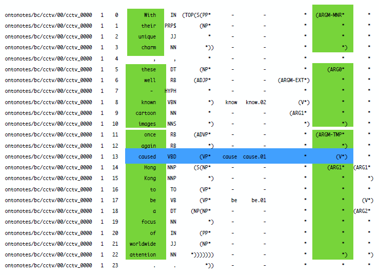
In the above example, the utterance “With their unique charm, these well-known cartoon images once again caused Hong Kong to be a focus of worldwide attention.” is annotated with multiple layers including a treebank, PropBank, word sense annotation, ontology, coreference, and entity names annotation layer. Bonial et al. (2012) provide a comprehensive description of these annotations. For the present study, the PropBank annotation layer is of paramount importance. The PropBank layer (Palmer, Gildea & Kingsbury 2005; Pradhan et al. 2022) annotates the argument structure of verbs. Specifically, it delineates the roles that different constituents play in relation to the verb. These roles, often referred to as arguments, can include agents, patients, instruments, and locations, among others. For instance, in the sentence “She gave Peter a watch.”, “She” is the agent (the one performing the action), “Peter” is the recipient, and “a watch” is the theme or the entity being given.
The word sense annotation layer, on the other hand, provides potential word senses for each word. These word senses, sometimes termed as role sets, are crucial for understanding the specific meaning a word takes in a given context. The origins of these senses are rooted in linguistic research and lexicon development, where words are analyzed in various contexts to determine their possible meanings. The specifics as to how these have been annotated can be examined in Bonial et al. (2012). The PropBank layer aids in identifying the argument structure, while the word sense layer pinpoints the specific word sense of a verb. To further elucidate how these annotations should be interpreted, consider the aforementioned utterance “She gave Peter a watch.” as illustrated in Table 1:
| roleType | pos | string | indices | roleset | lemma |
|---|---|---|---|---|---|
| arg0 | np | She | 0 | ||
| v | v | gave | 1 | give.01 | give |
| arg2 | np | Peter | 2 | ||
| arg1 | np | a watch | 3 |
In this utterance, the verb “gave” would be annotated with the lemma “give” and the role set “give.01” which is described as “transfer” in the PropBank frame files. The verb here is the frame-evoking element (FEE). The role set “give.01” has three arguments: “Arg0”, “Arg1” and “Arg2”. In PropBank annotation, this means that “Arg0” is the giver, “Arg1” is the thing given and “Arg2” is the entity given to. In traditional grammar, these arguments would be described as the agent (Arg0), patient (Arg1) and instrument/benefactive/attribute (Arg2). This paper will use PropBank terminology. This means that the above utterance would be annotated as follows: “She(Arg0-NP) gave(FEE-V) Peter(Arg2-NP) a watch(Arg1-NP)”. In other words, the argument structure construction in which the role set “give.01” is embedded is “Arg0-NP FEE-V Arg2-NP Arg1-NP”. This can be recognized as a ditransitive construction. However, it has to be clarified that the PropBank annotation is more specific than what generally is considered a ditransitive or prepositional dative construction. This paper focuses on the PropBank argument structure constructions and does not attempt to make any claims about these traditional constructions as this would require a more in-depth analysis. The PropBank annotation is used as a starting point for this study, and the goal is to explore the potential of using this annotation in a collostructional analysis.
PropBank notation, at first glance, appears intricate and extensive. This complexity is primarily due to the need to encapsulate a wealth of information within the notation itself. While it might seem tempting to abbreviate or simplify these notations, doing so would risk omitting crucial details. In the context of the study, particular attention is given to two specific constructions: “arg0(np)-FEE(v)-arg1(np)-arg2(pp)” and “arg0(np)-v(v)-arg2(np)-arg1(np)”. For the sake of clarity and ease of reference, these constructions are often abbreviated based on their distinctive features, specifically “arg2(pp)” and “arg2(np)”. However, it is imperative to note that when these structures are juxtaposed with others, the full notation is retained. This decision ensures that no vital information is lost, preserving the integrity and comprehensiveness of the analysis and interpretation.
The reason why using PropBank-annotated corpora to extract schemas, constructions, and alternations might be interesting is that it removes the need for manual annotation of these phenomena. This would allow for a larger data set to be analyzed, making the methodology more scalable and efficient. That is why this methodology is interesting to try out. The overarching goal is to discern whether this approach can provide valuable insights into the relationship between verbs and their argument structures, and if so, how these insights compare to traditional methods of analysis.
The data set employed for this study is derived from the OntoNotes 5.0 corpus, specifically a subset consisting of 9339 sentences. These sentences were selected based on instances where the defined constructions appeared. Detailed criteria and methodology for this selection can be found in Section 3.2. This subset was extracted using the CCxG Explorer2 (Beuls & Van Eecke 2021), a tool developed by the Evolutionary & Hybrid AI (EHAI) research team at the VUB Artificial Intelligence Lab. The primary objectives of the CCxG Explorer were to extract linguistic insights from large-scale construction grammar analyses concerning the English argument structure and to demonstrate the applicability of CCxG on a grand scale. Consequently, the CCxG Explorer enables usage-based linguists to search for corpus examples corresponding to specific semantic structures, offering a means to identify examples of morphosyntactic phenomena without the necessity for explicit identification (Beuls & Van Eecke to appear). The CCxG Explorer is accessible online at https://ehai.ai.vub.ac.be/ccxg-explorer/, and its source code is open to the public on Gitlab as a component of the Babel toolkit (EHAI).
The schema employed in the CCxG Explorer to extract the ditransitive constructions is represented as “Arg0-NP FEE-V Arg1-NP Arg2”. Notably, the exact order of the arguments is not strictly adhered to. This flexibility allows for the extraction of various constructions, such as “Arg0-NP FEE-V Arg2-NP Arg1-NP”, “Arg1-NP FEE-V Arg0-NP Arg2”, and “Arg1-NP FEE-V Arg2-NP Arg0”. The rationale behind this is that ditransitive constructions do not have a fixed order for arguments, permitting a more expansive exploration. To illustrate, consider the sentences:
- “She (Arg0) gave (FEE) the book (Arg1) to Peter (Arg2).”
- “She (Arg0) gave (FEE) Peter (Arg2) the book (Arg1).”
- “To Peter (Arg2), she (Arg0) gave (FEE) the book (Arg1).”
Furthermore, it is worth highlighting that the Arg2 slot does not specify a part of speech in the defined schema “Arg0-NP FEE-V Arg1-NP Arg2” combination. This design choice accommodates the fact that the Arg2 slot can be occupied by various parts of speech, such as an NP or a PP. An example of this is the dative alternation of the ditransitive construction: “She gave a watch to Peter” (arg0(np)-FEE(v)-arg1(np)-arg2(pp)). It is interesting to note that within CxG approaches, this alternation is perceived as a distinct construction (Goldberg 2002).
Construction-based approaches consider whether a verb can be used in one or both members of an alternating pair based on semantic compatibility. A word can be used in a particular construction if its meaning aligns with the meaning of the construction. It can also alternate between two constructions if its meaning aligns with both. When it comes to alternating pairs, this approach raises questions about the semantic differences between the members of the pair, the degree of productivity in actual usage, and whether a constructional approach can be taken given the answers to these questions (Gries & Stefanowitsch 2004).
The search results for this particular schema yielded 9339 utterances. These were downloaded in the form of a .json file, which served as the raw data for this analysis. This file encompasses the string of utterances and the roles delineated within each utterance. The roles are further detailed by attributes such as roleType, part of speech (pos), string, indices, role set, and lemma. Within these 9339 utterances, there were 924 unique role sets.
Upon examining the .json file, it becomes evident that there is no specific reference indicating where each utterance occurred within the corpus, meaning there is no source location provided. This absence is a significant limitation because it restricts the ability to trace back and contextualize each utterance within its original source. It can be speculated that this omission might be due to the corpus being protected by a license, preventing the full sharing of its content. While this limitation does pose challenges for this analysis, it is essential to note that the primary goal of this study is not to make definitive claims but rather to test a specific method in a particular context. Therefore, despite the constraints, the analysis can still be conducted, keeping in mind its exploratory intent.
A “unique argument structure construction” refers to a distinct combination of roles and their order in relation to the verb, capturing the specific syntactic and semantic relationships between the verb and its arguments. For instance, while “She gave Peter a watch” and “She handed Peter a book” both have the same argument structure, “She gave a watch to Peter” would be considered a different argument structure due to the presence of the preposition “to” and the change in the order of the arguments. In the data, there were 87 such unique argument structure constructions that fit the schema previously described.
This study is an experimental attempt to explore the potential of using PropBank-annotated corpora and Computational Construction Grammar (CCxG) in a collostructional analysis. It does not aim to make definitive claims but rather to test out a specific method in a particular context. This paper consists of several sections. It begins by exploring the theoretical foundations that explain the potential of performing a collostructional analysis on a PropBank annotated corpus. This is followed by a methodology section, which covers the reasons for the chosen schema and constructions, data processing methods, the execution of the Distinctive Collexeme Analysis (DCA), and the rationale behind the selected association measures. In the analysis section, findings are compared with previous studies, different association measures across the dataset are evaluated, and specific lemma/roleset combinations are examined. The section also delves deeper into instances where rolesets might offer more insights than lemmas. Finally, the paper concludes with a discussion of the results and a brief exploration of the limitations of the study and potential future directions.
Throughout this study, several examples from the corpus will be showcased to illustrate various points and concepts. While it might be common in some research to present example sentences in tables, it was consciously refrained from doing so in this paper as much as possible. Including example sentences in tables would quickly overpopulate them, making it challenging to navigate and extract meaningful insights. Moreover, given the vastness of the data and the goals of this research, it was deemed unnecessary to illustrate every sense or lemma with an example. Providing an example for every sense or lemma would not only be redundant but might also detract from the primary focus of the study. It is essential to strike a balance between comprehensive illustration and maintaining clarity and coherence in the presentation of results. For those interested in delving deeper into specific senses or seeking additional examples, the PropBank frame files serve as a comprehensive database. These files offer a wealth of information and can be consulted for a more detailed exploration of the senses and their associated examples.
2 Theoretical Underpinnings
In the subsequent section of this study, attention is directed towards the theoretical underpinnings that form the foundation of the research. While the primary objective of this study is an exploration of a specific analytical tool rather than a comprehensive, definitive investigation, it is essential to shed light on the theoretical frameworks that have influenced the corpus, its annotation and the motivation for the selected constructions. Three primary theoretical pillars support this study: Construction Grammar, Frame Semantics, and the PropBank annotation methodology. These frameworks provide the necessary context, ensuring that the data and findings align with established linguistic theories.
2.1 Construction Grammar (CxG)
CxG views language as a collection of constructions, or form-meaning pairings. It challenges traditional linguistic boundaries, treating all linguistic elements uniformly. While CxG has multiple theoretical offshoots, this short explanation focuses solely on aspects pertinent to the current paper. For a broader understanding of CxG and its variations, works by Hoffmann (2022), Ungerer & Hartmann (2023), and van Trijp (2024) offer a comprehensive overview. The basic tenets of CxG are as follows:
Constructions as Linguistic Knowledge: CxG asserts that all linguistic understanding is captured as constructions, pairs of form and meaning that work in tandem to aid language comprehension and production (Croft 2001; Croft & Cruse 2004).
Lexicon-Grammar Continuum: CxG blurs the traditional boundaries between “words” and “grammar rules”, treating all linguistic elements uniformly (Fillmore, Kay & O’Connor 1988).
Dynamic Nature: In (usage-based) CxG, constructions evolve through communication, reflecting individual linguistic knowledge (Van Eecke & Beuls 2018).
Structured Inventory: CxG envisions constructions as an organized set, often represented as a network (Hoffmann 2017; Diessel 2019, 2023).
The principles of CxG suggest that language is not just a set of rules but a dynamic system where meaning and form are intricately linked. This perspective allows for a more flexible and holistic understanding of language, emphasizing its adaptive nature and the importance of structured organization for efficient processing and comprehension. Each construction is conceptualized as a bridge between form and function (Fillmore, Kay & O’Connor 1988; Kay 1990). This perspective on grammaticality, which incorporates both syntactic and semantic/pragmatic dimensions, differs from traditional modular approaches to language (Hoffmann 2022).
Understanding the essence of a “construction” in CxG is crucial for applying this linguistic theory. The discussions by Haspelmath (2023) and van Trijp (2024) contribute to this understanding. Haspelmath’s (2023) proposed definition of a “construction” for general linguistics aligns well with the particular focus of this study.
A construction is distinguished from “construct”, an actual linguistic expression, and “constructional analysis”, a linguist’s model of a construct, as explained by van Trijp (2024). In CxG, a construction refers to recurrent, partially fixed patterns within a language. This implies that while certain elements of the pattern are set, there are also flexible slots allowing for variability. A more precise definition by Haspelmath (2023) proposes that a construction is a conventional schema for creating expressions, with at least one open slot that can be filled by expressions from the same form-class.
Key terms used in this definition include “schema”, an abstract pattern; “open slot”, a position within the schema to be filled by an expression; “expression”, a meaningful linguistic unit; and “form-class”, a group of expressions that can be filled into an open slot in a construction.
Thus, in this study, a construction is understood to be a structure or template that guides the formation of linguistic units, and is not an expression in itself.
2.2 Frame Semantics
In this section, Frame Semantics, a key theoretical foundation for this study, is explored. As the main focus is on a Computational Construction Grammar approach and a collostructional analysis of a PropBank-annotated corpus, understanding Frame Semantics (Fillmore 2006) becomes essential. This understanding is particularly crucial when examining the distinctions between lemmas and their word senses in different constructions.
Rooted in Construction Grammar, Frame Semantics emphasizes the bond between form and meaning through semantic frames. These frames organize knowledge about word meanings, where understanding one concept implies grasping its broader context. For instance, the verb ‘to cook’ can evoke an entire cooking scenario, simplifying it into a semantic frame. Within this frame, parts of the scene, termed Frame Elements, reflect cognitive comprehension of the experience. In language, these elements translate to Semantic Roles, defining functions entities play in the described situation.
However, a semantic frame’s representation in language isn’t always straightforward. A word can evoke multiple frames, underscoring the context-dependent nature of Frame Semantics.
van Trijp (2024) outlines four mapping processes for expressing and understanding semantic frames:
- Associating a situation with its relevant semantic frame.
- Aligning Frame Elements with Semantic Roles.
- Mapping Semantic Roles to Grammatical Functions.
- Expressing these functions in specific linguistic choices.
In Cognitive Construction Grammar (CCxG), a verb activating a semantic frame initiates a mapping process. This aligns Frame Elements with Semantic Roles using Argument Structure Constructions (ASCs). For example, in “John cooked pasta in the kitchen”, ‘cook’ triggers the ‘Cooking_Creation’ frame, mapping Frame Elements to roles like agent, patient, and location.
CCxG’s Argument Structures function as constructions. The combination of verb-specific Frame Elements with broader Semantic Roles requires alignment between the verb’s frame and the overarching argument structure frame.
In summary, Frame Semantics provides a structured approach to understanding semantics and syntax interplay. By mapping Semantic Roles onto Grammatical Functions, CCxG offers insights into how constructions interpret and express these roles.
2.3 Operationalizing Frame Semantics: PropBank
PropBank (Palmer, Gildea & Kingsbury 2005; Pradhan et al. 2022) stands as a pivotal project that has significantly advanced the formalization of semantic frames. It annotates a corpus with semantic roles to document how arguments of the general English lexicon’s predicates are syntactically represented. This section delves deeper into the PropBank corpus, its annotation process, and its relevance to the current study.
PropBank’s primary objective is to document the syntactic execution of predicates in the general English lexicon by annotating a corpus with semantic roles. Unlike other projects like FrameNet (Ruppenhofer et al. 2006), PropBank’s focus is on providing data beneficial for training statistical systems. This necessitates the comprehensive annotation of every clause in the Penn Treebank. PropBank consistently labels semantically related verbs, primarily using VerbNet classes to determine this semantic relatedness, with less emphasis on defining the semantics of the class associated with the verbs (Palmer, Gildea & Kingsbury 2005).
The creation of PropBank involved a process of manual annotation. Annotators were provided with guidelines (Bonial et al. 2012) to ensure consistency across the corpus. The annotation process involved marking up the argument structure of verbs and their associated roles. Additionally, the senses or meanings of the verbs were also annotated, capturing the different nuances a verb can have based on its context. This dual focus on argument structure and verb senses is crucial for a nuanced understanding of the data.
A distinguishing feature of PropBank is its approach to semantic roles. Unlike other frameworks that use specific role names (Ruppenhofer et al. 2006), PropBank employs a more abstract set of roles, such as Arg0 and Arg1. These roles require additional interpretation to understand their exact meaning in a given context. For instance, Arg0 in one sentence might represent a “Buyer” in a commerce event, but its exact role would need further context or inference.
PropBank’s primary focus is on verbs, and its annotation is carried out in relation to the Penn Treebank trees. Annotators mark the beginning and end points of frame elements in the text and add a grammatical function tag to express the frame element’s syntactic relation to the predicate (Palmer, Gildea & Kingsbury 2005).
In PropBank, the concept of a “frame” or “roleset” is verb-specific, detailing the argument structure for a particular sense of a verb. For example, the verb “buy” might have roles like ARG0 (buyer), ARG1 (thing bought), ARG2 (seller), and ARG3 (price paid). This verb-centric notion contrasts with other frameworks that use a broader concept of a frame.
The table below provides a snapshot of PropBank’s frames for the verbs “buy” and “sell”:
| Frame | Word Sense | Arg0 (PAG) | Arg1 (PPT) | Arg2 (DIR/GOL) | Arg3 (VSP) | Arg4 (GOL) |
|---|---|---|---|---|---|---|
| buy.01 | purchase | buyer | thing bought | seller | price paid | benefactive |
| sell.01 | commerce: seller, giving in exchange for money | seller | thing sold | buyer | price paid | benefactive |
In summary, PropBank offers a unique approach to semantic role labeling, focusing on verb-specific frames and abstract role labels. Its methodology and annotations provide valuable insights for studies exploring the syntactic and semantic nuances of the English lexicon, making it a potentially interesting resource for the current research on collostructional analysis.
3 Methodology
The methodology section delves into the systematic approach adopted for this study. Firstly, it elucidates the rationale behind the schema selection used to extract data from the PropBank annotated corpus. This is followed by a detailed account of the data processing techniques employed to ensure the accuracy and relevance of the extracted information. The third segment provides an in-depth explanation of the Distinctive Collexeme Analysis (DCA) and its significance in the context of this research. Lastly, the section sheds light on the choice of association measures, underpinned by a correlation analysis that justifies their selection. This comprehensive breakdown ensures a transparent and replicable research process.
3.1 Schema Selection from PropBank: Understanding the Criteria and Rationale
The process of schema selection for this study was intricately tied to the principles of Construction Grammar (CxG) and Frame Semantics. A structure like “arg0(np)-FEE(v)-arg1(np)-arg2(pp)” is proposed as a valid argument structure construction. This structure aligns form and meaning, consistent with CxG’s understanding of language as a system where these elements are interconnected. It is worth noting that not all linguists might agree with this perspective. However, this study does not aim to contribute to this debate but rather to explore the potential of this approach in a specific context.
Moreover, the flexibility in the order of arguments, as seen in variations like “Arg0-NP FEE-V Arg2-NP Arg1-NP”, “Arg1-NP FEE-V Arg0-NP Arg2”, and “Arg1-NP FEE-V Arg2-NP Arg0”, is a feature of CxG. This is further exemplified by the dative alternation in sentences like “She gave a watch to Peter”, which can also be expressed as “arg0(np)-FEE(v)-arg1(np)-arg2(pp)”. In CxG, such alternations are viewed as distinct constructions (Goldberg 2002).
The decision to use structures like “arg0(np)-FEE(v)-arg1(np)-arg2(pp)” (=Arg2(pp)) and “arg0(np)-v(v)-arg2(np)-arg1(np)” (=Arg2(np)) for collostructional analysis is based on the idea that these constructions might help explore potential valid alternations. This is in line with CxG and Frame Semantics, which suggest a relationship between form and meaning. A pivotal aspect of this study was the utilization of the CCxG Explorer, a tool designed to facilitate the extraction of specific constructions from the PropBank annotated corpus. The schema implemented in the CCxG Explorer for extracting ditransitive constructions is delineated as “Arg0-NP FEE-V Arg1-NP Arg2”.
In this study, there was no specific restriction placed on which prepositional phrase (e.g., “to”, “with”, “from”) could be used in the Arg2 slot. This was a deliberate choice, motivated by the desire to capture a broader range of linguistic variability and to see how different prepositions might interact within the same construction. For instance, while “Bring the cat to me” and “bring me the cat” both use “me” as Arg2, the preposition “to” plays a crucial role in the first sentence. Similarly, “Bring the cat for an exam” cannot be alternated with “Bring an exam the cat”, highlighting the importance of the preposition in determining the validity of the alternation.
However, it is essential to recognize that this broad approach might not be entirely accurate. For a more refined analysis, it would be possible to consider only specific prepositions like “to” and see how the results differ. Such a focused study could provide insights into the nuances of different prepositions within the construction. However, this more detailed exploration lies beyond the scope of the current research.
In sum, while this study’s methodology offers a different perspective on language, it is just one of many approaches and is open to further discussion and evaluation. The choice to include a range of prepositions was intentional, but it is acknowledged that this might introduce complexities that warrant separate investigation.
3.2 Data Processing
The entire data processing and analysis were done in R using the packages {base}, {graphics}, {here}, {stats}, {utils}, {ggplot2}, {dplyr}, {jsonlite}, {stringr}, {tibble} and {tidyr}. Most of which can be found in the {tidyverse} package (Wickham et al. 2019). The data set was first cleaned and then analyzed using the DCA. The data processing is described in the following section. It is visualized in Figure 2.
Figure 2 shows a step-by-step process of cleaning the corpus and narrowing the focus to specific constructions. The top level is the corpus itself, which is filtered to focus on a specific schema, in this case, arg0(np)-v(v)-arg1(np)-arg2. From there, the filtered corpus shows 87 different argument structure constructions. The first construction is arg0(np)-v(v)-arg1(np)-arg2(pp) (=Arg2_pp) and the second construction is arg0(np)-v(v)-arg2(np)-arg1(np) (=Arg2_np). These are further divided into role sets that appear exclusively in one (marked in red and not analyzed in the present paper) and role sets that appear in both constructions (marked in green and analyzed).
The data was initially converted into a data frame format, and only the columns pertinent to the analysis were retained. It is important to note that while the original data file does include the actual utterances, this column is not displayed in the presented data frame since it does not contribute directly to the analysis at hand. Instead, a function was employed to identify and categorize the argument structure construction from each utterance. The refined data frame, hence, comprises the argument structure construction, role set, and lemma. This data frame encapsulates all the information utilized for the analysis, as illustrated in Table 3. This data will be referred to as “processed data”, given that it has undergone specific transformations and selections to suit the study’s objectives. The original data, including the full utterances, is preserved but not showcased in this context to maintain focus on the analytical aspects.
| arg_struc_cxn | roleset | lemma |
|---|---|---|
| arg0(np)-v(v)-arg1(np)-arg2(c("s", "vp")) | invite.01 | invite |
| arg0(np)-v(v)-arg1(np)-arg2(pp) | force.01 | force |
| arg0(np)-v(v)-arg1(np)-arg2(pp) | connect.01 | connect |
| arg0(np)-v(v)-arg1(np)-arg2(pp) | receive.01 | receive |
| arg0(np)-v(v)-arg1(np)-arg2(pp) | draw.02 | draw |
| arg0(np)-v(v)-arg1(np)-arg2(pp) | lay.01 | lay |
| arg0(np)-v(v)-arg1(np)-arg2(c("s", "vp")) | order.01 | order |
| arg0(np)-v(v)-arg1(np)-arg2(np) | call.01 | call |
| arg0(np)-v(v)-arg1(np)-arg2(pp) | deal.02 | deal |
| arg0(np)-v(v)-arg1(np)-arg2(adjp) | turn.02 | turn |
Table 3 shows a small sample of data used for subsequent analyses. The table contains three columns: “arg_struc_cxn”, “roleset”, and “lemma”. The “arg_struc_cxn” column lists the argument structure construction that the role set occurs. The “roleset” column lists the specific role set that the lemma takes on. Finally, the “lemma” column lists the lemma of the verb.
3.3 Distinctive Collexeme Analysis (DCA)
As previously mentioned, the type of analysis used for this paper is a collostructional analysis. According to Gries (2013), there are several types of collostructional analysis. There is a Simple Collexeme Analysis (SCA), Distinctive Collexeme Analysis (DCA) and Covarying Collexeme Analysis (CCA). The type of analysis used for this paper is the Distinctive Collexeme Analysis. Since this is the only relevant type of analysis for this paper, the other types of analysis will not be discussed further.
DCA (Gries & Stefanowitsch 2004) compares all words that occur in a slot of two similar constructions. It is based on the frequency of the word and the constructions it occurs in. Gries (2013) presents which frequency information is needed for a DCA (Table 4).
| Word l of Class L | Other Words of Class L | Total | |
|---|---|---|---|
| Construction c1 of Class C | Frequency of L(l) in C(c1) | Frequency of L(-l) in C(c1) | Total frequency of C(c1) |
| Construction c2 of Class C | Frequency of L(l) in C(c2) | Frequency of L(-l) in C(c2) | Total frequency of C(c2) |
| Total | Total frequency of L(l) in C(c1,c2) | Total frequency of L(-l) in C(c1,c2) | Total frequency of C(c1,c2) |
In this table, the frequency of a word (l & -l) and construction (c1 & c2) are mapped to create a contingency table containing the frequency of l in c1, l in c2, -l in c1, -l in c2. These are then combined to create a total frequency. Such a contingency table can then be used to perform a contingency test to return association measures like, for example, the Fisher-Yates p score. The Fisher-Yates p score is the score that is used most often in these types of analyses (Hilpert 2006; Wiliński 2017; Gilquin 2013; Gries & Stefanowitsch 2004; Gries 2013) and will, therefore, be discussed more thoroughly than the other association measures. This measure is preferred over others, like chi-squared, because it does not break any assumptions about the distribution of the data (Ellis & Ferreira–Junior 2009). It is used to measure the strength of association between, in this case, a word and a construction. The p-value represents the probability of obtaining a test statistic as extreme or more extreme than the one observed.
A small p-value (typically less than 0.05) suggests that the null hypothesis can be rejected and that the difference in co-occurrence frequencies between the two words being compared is not due to chance. Conversely, a significant p-value (typically greater than 0.05) suggests insufficient evidence to reject the null hypothesis and that the difference in co-occurrence frequencies may be due to chance. In other words, a small p-value means that the difference in co-occurrence frequencies between the two words is statistically significant, and it is unlikely that the observed difference is due to chance. However, it is common in collostructional analysis to log-transform these values to make them more intuitive to interpret (Levshina 2015). The same will be done in this analysis. As a result, the values will range from - infinity to + infinity. On that scale, large negative numbers indicate mutual repulsion, large positive numbers indicate mutual attraction and values around zero indicate a lack of association. It is important to note that in DCA (Distinctive Collexeme Analysis), there is a focus on the differences between constructions. SCA (Simple Collexeme Analysis) can be used to uncover similarities between constructions (Gries & Stefanowitsch 2004), but this approach is not employed in this study due to its limited scope. For clarity, SCA examines the strength of attraction between a verb and a particular construction, highlighting common pairings.
An extension of DCA is the possibility to perform it on a data set with more than two types of constructions. This is referred to as Multiple Distinctive Collexeme Analysis (MDCA) (Gries & Stefanowitsch 2004). It is based on the same principles as DCA, but instead of comparing two constructions, it compares multiple constructions. To perform an MDCA on a data set, a contingency table with multiple rows for each construction is required. Gries (2013) provides Table 5 to illustrate which frequency information is needed for an MDCA.
| Word l of Class L | Other Words of Class L | Total | |
|---|---|---|---|
| Construction c1 of Class C | Frequency of L(l) in C(c1) | Frequency of L(-l) in C(c1) | Total frequency of C(c1) |
| Construction c2 of Class C | Frequency of L(l) in C(c2) | Frequency of L(-l) in C(c2) | Total frequency of C(c2) |
| … | … | … | … |
| Construction c(n) | Freq. of L(l) in C(cn) | Freq. of L(-l) in C(cn) | Total frequency of C(cn) |
| Total | Total frequency of L(l) in C(c1,c2, …n) | Total frequency of L(-l) in C(c1,c2, …n) | Total frequency of C(c1,c2, …n) |
As can be observed in the above table, the difference is that in the MDCA contingency table, there is an n number of constructions represented in the columns. Due to the limited scope of this paper, only the DCA will be discussed in the analysis section. However, the MDCA was still performed, and the results are available in the appendix because it could prove helpful in future research.
To perform both types of analyses, an R script developed by S.T. De Gries (Gries 2022) was used and adapted to suit the data set in this paper. Regarding the DCA, this script calculates the association measures for all words (lemma/role set) concerning the two most frequent argument structure constructions from the data set and returns a table containing the association measures for each. In total, eight association measures are given. They are presented in Table 6. Not all of them are as extensively used in the analysis. However, they are presented for completeness and to give a general overview of the available measures when using DCA on a PropBank-annotated corpus. A comparison between these measures is briefly discussed in Section 3.4 based on a correlation analysis.
| Association Measure | Full Name |
|---|---|
| LLR | Log-Likelihood Ratio |
| PRES | Pearson Residual |
| LOR | Log Odds Ratio |
| MI | Mutual Information |
| DPC2W | Difference in Probability of Construction to Word |
| DPW2C | Difference in Probability of Word to Construction |
| FYE | Log-transformed Fisher-Yates Exact Test |
When analyzing associations between variables or events, two primary types of measures come into play: effect-size measures and strength of evidence measures. Understanding the distinction between these two is crucial for interpreting results and drawing meaningful conclusions. The following provides a brief overview of these two types of measures and their interpretation.
1. Effect-Size Measures
Effect-size measures are designed to quantify the magnitude or size of an observed effect. Their primary objective is to delineate the difference between observed and expected frequencies. It is pivotal to understand that a pronounced effect size does not necessarily equate to statistical significance; it merely indicates a substantial observed effect.
Pearson Residuals (PRES) exemplifies effect-size measures. It gauges the disparity between observed and expected frequencies. A pronounced absolute value of PRES indicates a significant deviation from what would be expected under the premise of independence.
2. Strength of Evidence Measures
On the other hand, strength of evidence measures offer insights into the statistical significance of an observed effect. Their role is to test the null hypothesis, which often postulates the independence of two events. A value smaller than \(log_{10}(0.05)\) suggests a significant association, indicating that the observed relationship is not merely coincidental.
For instance, the Log-Likelihood Ratio (LLR) is a measure that evaluates the strength of evidence against the null hypothesis of independence between two events. A high LLR value denotes a robust association.
When analyzing the Log-transformed Fisher-Yates Exact Test (FYE) values, collexemes with values exceeding 1.3 suggest an attraction to the construction. Conversely, values below -1.3 indicate a repulsion. This interpretation hinges on the addition of a negative sign to signify repulsion, a detail that must be explicitly stated. It is crucial to note that strength of evidence measures do not inherently differentiate between attraction and repulsion; this distinction must be clearly articulated.
Values nearing zero signify a near-equivalent preference between two constructions. The demarcation between central and peripheral collexemes is not rigid but exists on a spectrum. Therefore, any chosen benchmark should be approached with caution. Additionally, it is worth noting that p-values are influenced by the sample size. A more extensive corpus inherently provides richer data, leading to diminished p-values and more accentuated log-transformed scores. This is not an unintended consequence but an inherent feature of the methodology, as highlighted by Levshina (2015).
In summary, while effect-size measures address the “how much” of an effect, strength of evidence measures elucidate the “how sure” aspect of the observed effect’s existence.
3.4 Correlation Analysis of the Association Measures
Table 7 presents a correlation analysis of the association measures used in the DCA. The rows and columns represent different measures, and the values in the cells represent the correlation between the measure in the corresponding row and column. This type of analysis is used to evaluate the strength and direction of a relationship between two variables. It can be used to determine if there is a relationship between variables and, if so, how strong that relationship is. Correlation coefficients range from -1 to 1, with -1 indicating a perfect negative correlation, 0 indicating no correlation, and 1 indicating a perfect positive correlation. In this case, the variables are the different scores from the association measures. The closer the value is to 1, the stronger the association between the two variables. The closer the value is to -1, the stronger the negative association between the two variables. The closer the value is to 0, the weaker the association between the two variables.
| association_measure | LLR | PRES | LOR | MI | DPC2W | DPW2C | FYE |
|---|---|---|---|---|---|---|---|
| log.likelihood.values | 1 | 0.829 | 0.793 | -0.235 | 0.823 | 0.793 | 0.65 |
| pearson.residuals | 0.829 | 1 | 0.951 | 0.213 | 0.994 | 0.951 | 0.49 |
| log.odds.ratios | 0.793 | 0.951 | 1 | 0.352 | 0.945 | 1 | 0.444 |
| mi.scores | -0.235 | 0.213 | 0.352 | 1 | 0.196 | 0.352 | -0.27 |
| delta.p.constr.cues.word | 0.823 | 0.994 | 0.945 | 0.196 | 1 | 0.945 | 0.489 |
| delta.p.word.cues.constr | 0.793 | 0.951 | 1 | 0.352 | 0.945 | 1 | 0.444 |
| fisher.scores | 0.65 | 0.49 | 0.444 | -0.27 | 0.489 | 0.444 | 1 |
LLR (Log-Likelihood Ratio): This is a strength of evidence measure that evaluates the likelihood that the observed data, given certain assumptions, would occur if two events were independent. A high LLR value indicates a low probability that the observed data occurred by chance, implying a strong association between the two events. In essence, it tests the null hypothesis that two events are independent of each other. Higher values suggest stronger evidence of an association.
PRES (Pearson Residuals): Serving as an effect-size measure, PRES quantifies the discrepancy between observed and expected frequencies. It measures the difference between what is observed in the data and what would be expected if the two events were independent. A value of 0 indicates that the observed frequency matches the expected frequency, signifying independence. Positive values indicate a higher-than-expected frequency, while negative values suggest a lower-than-expected frequency. A high absolute value of PRES indicates a significant deviation from what is expected under independence.
FYE (Log-transformed Fisher-Yates Exact Test): This strength of evidence measure assesses the likelihood of observing the given data (or more extreme data) if the two events were independent. It is particularly useful for small sample sizes, providing exact p-values. Higher values of FYE suggest stronger evidence of an association.
Table 7 shows a strong positive correlation between LLR, PRES, LOR, DPC2W, and DPW2C measures (values are close to 1), indicating that these measures are highly related. The FYE measure, while being the standard in this type of analysis, is positively correlated but to a lesser extent (values are around 0.5) with the other measures. The MI measure is weakly correlated (values are close to 0) with the other measures. The strong positive correlation between LLR, PRES, and LOR indicates that when one measure detects a strong association, the others likely do as well. However, while PRES (an effect-size measure) quantifies the magnitude of the association, LLR and LOR (strength of evidence measures) provide evidence of its statistical significance.
To provide a comprehensive understanding, the analysis in this paper delves deeper into the characteristics of the three association measures: FYE, LLR, and PRES. While FYE serves as the primary measure in this paper, LLR and PRES are also considered in the results section to highlight the differences and similarities in their outcomes.
4 Data Exploration, Results and Discussion
The following section is dedicated to exploring the results of the analysis. It consists of an examination of the processed corpus data, focusing on the differences between lemmas and rolesets. This exploration sets the stage for presenting the outcomes of the Distinctive Collexeme Analysis (DCA). The results are then contextualized by comparing them with findings from a previous study. A portion of the analysis is dedicated to evaluating various association measures and assessing their results for both lemmas and rolesets. These measures are also compared to understand their relative merits. Lastly, the analysis looks into specific rolesets and lemmas to determine if rolesets offer any additional insights compared to lemmas. This structured approach ensures a comprehensive discussion of the data and its implications.
4.1 Exploring the data set
The following section will conduct an exploration of the cleaned corpus data. It focuses on the role sets (word senses) of verbs. Inherent to the PropBank annotations is that a lemma can appear in multiple senses (Palmer, Gildea & Kingsbury 2005; Pradhan et al. 2022; Bonial et al. 2012). The logical consequence of this is that there are more role sets than there are lemmas. In other words, a verb can be used in different senses, and these senses are potentially linked to a specific construction. For example, the lemma “catch” can appear in role sets “catch.02” and “catch.03” and the lemma “charge” appears in the role sets “charge.01”, “charge.04” and “charge.05”. Table 8 illustrates these role sets with their semantic meaning and an example utterance from the corpus.
| Lemma | Roleset | Meaning | Utterance | Arg_Struc_Cxn |
|---|---|---|---|---|
| catch | catch.02 | come upon, find | “We caught them cheating” | arg0(np)-v(v)-arg1(np)-arg2(v) |
| catch.03 | trap | “…asking locals not to […] catch them in nets.” | arg0(np)-v(v)-arg1(np)-arg2(pp) | |
| charge | charge.01 | asking price | “He charged you a fortune?” | arg0(np)-v(v)-arg1(np)-arg2(np) |
| charge.04 | buy on credit | “…car buyers charge […] their purchase on the […] card” | arg0(np)-v(v)-arg1(np)-arg2(pp) | |
| charge.05 | make an allegation | “…they indicated their intention to charge Mr. Noriega himself with crimes…” | arg0(np)-v(v)-arg1(np) |
Table 8 shows information about the different senses of a single lemma (in this case, “catch” and “charge”). Each row represents a different sense of the lemma, identified by its role set. The columns in the table provide information about the meaning of the sense, as defined in the PropBank database, an example utterance from a dataset, and the argument structure construction (arg_struc_cxn) of that utterance. To further clarify how the argument structure construction is applied to the utterance, Table 9 is given:
| roleType | pos | string | indices | roleset | lemma |
|---|---|---|---|---|---|
| arg0 | np | We | 0 | ||
| v | v | caught | 1 | catch.02 | catch |
| arg1 | np | them | 2 | ||
| arg2 | v | cheating | 3 |
Table 9 shows the information in the sentence “We caught them cheating.” as annotated in the OntoNotes corpus. The lemma is “catch”, the role set is “catch.02” and the roleType, pos (part of speech), string and indices of the words that fill the role are given in the table. The word ‘We’ fills the role of arg0, the word ‘caught’ fills the role of v, the word ‘them’ fills the role of arg1 (entity) and the word ‘cheating’ fills the role of arg2 (attribute).
Table 10 shows a list sorted based on the frequency of the lemmas and role sets in the data set. The argument structure constructions are ordered based on the frequency with which they appear in the data set.
| lemma | roleset | total | arg0(np)-v(v)-arg1(np)-arg2(pp) | arg0(np)-v(v)-arg2(np)-arg1(np) | arg0(np)-v(v)-arg1(np)-arg2(c("s", "vp")) | arg0(np)-v(v)-arg1(np)-arg2(vp) | arg0(np)-v(v)-arg1(np)-arg2(np) |
|---|---|---|---|---|---|---|---|
| give | give.01 | 976 | 224 | 662 | 1 | ||
| put | put.01 | 443 | 355 | 2 | |||
| use | use.01 | 381 | 76 | 284 | |||
| bring | bring.01 | 243 | 175 | 27 | 4 | ||
| take | take.01 | 225 | 189 | 3 | 1 | 1 | |
| call | call.01 | 195 | 3 | 2 | 130 | ||
| tell | tell.01 | 192 | 19 | 150 | |||
| send | send.01 | 188 | 111 | 49 | 1 | 3 | |
| spend | spend.02 | 134 | 49 | 74 | 2 | ||
| force | force.01 | 118 | 22 | 2 | 80 |
Table 10 indicates the frequency of the different role sets in different constructions, represented by the column names. The “total” column represents the sum of all the values in that row or, in other words, the total frequency of the specific role set. It is not a surprise that the lemma “give” in the sense “give.01” is the most frequent in the previously defined argument structure schema by quite a margin. This has been well-established in previous research (Gries & Stefanowitsch 2004; Levshina 2015). Therefore, it could be expected that the high frequency of the Arg2(np) construction is due to the high frequency of “give.01” in it. This can be examined by looking at Figure 3 which shows the frequency of the different argument structure constructions in the data set.
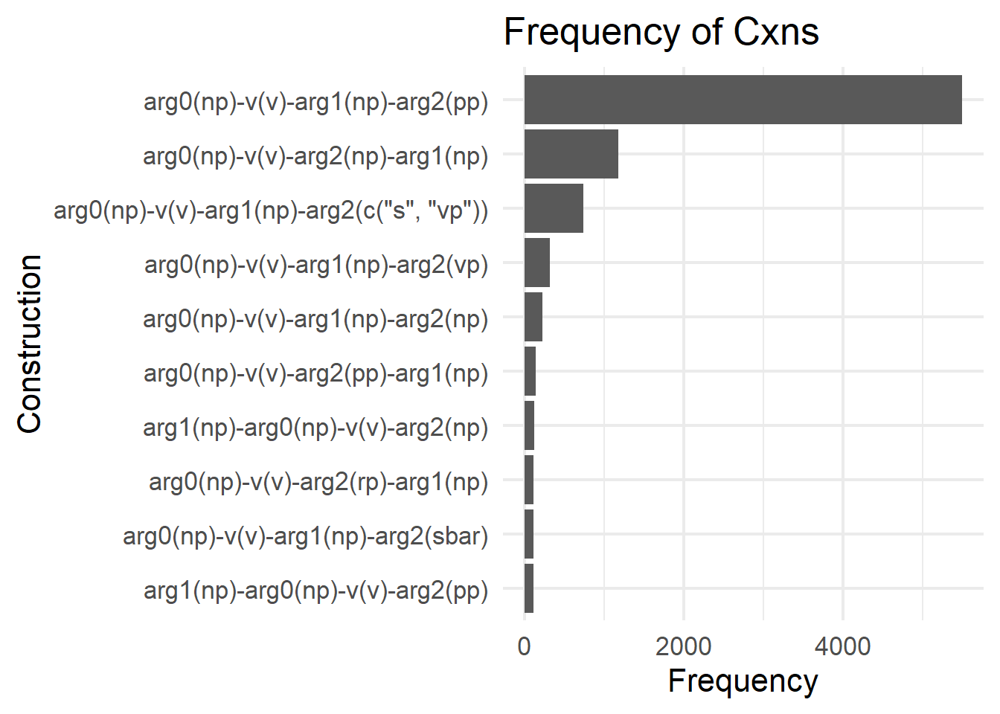
Figure 3 shows the data set’s distribution of different argument structures (arg_struc_cxn). Each row in the table represents a different argument structure, and the “Freq” column shows the number of times that argument structure was found. It shows the ten most frequent argument structure constructions. The three most frequent argument structures in the data set are “arg0(np)-v(v)-arg1(np)-arg2(pp)” (5497 occurrences), “arg0(np)-v(v)-arg2(np)-arg1(np)” (1180 occurrences) and “arg0(np)-v(v)-arg1(np)-arg2(c(”s”, “vp”))” (741 occurrences). These frequencies are essential to keep in mind when interpreting the results of the DCA analysis. This analysis was performed on the two most frequent types of argument structure construction occurring in the data set. As can be seen in Figure 3, there is a significant difference in frequency between the two most frequent constructions. For example, the “arg0(np)-v(v)-arg2(np)-arg1(np)” is the construction in which “give.01” was most frequent, with 662 occurrences. In other words, roughly 56% of the times “arg0(np)-v(v)-arg2(np)-arg1(np)” appeared, it was in the context of “give.01”.
4.2 Examining the results of the DCA
The next part of the analysis section will depart from the DCA lemma and role set table (Table 11), which contains all calculated association scores. First, the analysis gives a general overview of the most frequent and distinctive collostructions found in the corpus. Then, it will examine the specific role sets and association measures to gain insight into the patterns and preferences of the data. Finally, examples of the collostructions will be provided to assist in understanding the findings and interpreting the results. The full results of the analyses are available in the appendix. The results of the DCA are presented in Table 11:
| WORD | Arg2_pp | Arg2_np | PREF | LLR | PRES | LOR | MI | DPC2W | DPW2C | FYE |
|---|---|---|---|---|---|---|---|---|---|---|
| drive.02 | 17 | 1 | arg0(np)-v(v)-arg1(np)-arg2(pp) | 2.4 | 0.57 | 1.30 | 0.20 | 0.00 | 0.12 | 0.64 |
| sell.01 | 82 | 5 | arg0(np)-v(v)-arg1(np)-arg2(pp) | 11.1 | 1.23 | 1.27 | 0.20 | 0.01 | 0.12 | 2.36 |
| name.01 | 15 | 1 | arg0(np)-v(v)-arg1(np)-arg2(pp) | 1.8 | 0.50 | 1.17 | 0.19 | 0.00 | 0.11 | 0.48 |
| hear.01 | 13 | 1 | arg0(np)-v(v)-arg1(np)-arg2(pp) | 1.3 | 0.43 | 1.03 | 0.17 | 0.00 | 0.11 | 0.31 |
| deliver.01 | 19 | 2 | arg0(np)-v(v)-arg1(np)-arg2(pp) | 1.1 | 0.41 | 0.71 | 0.14 | 0.00 | 0.08 | 0.39 |
In Table 11, the first column, “WORD”, displays the lemma/role set of the word. The subsequent two columns indicate the frequency of the word in two distinct constructions: “arg0(np)-v(v)-arg1(np)-arg2(pp)” and “arg0(np)-v(v)-arg2(np)-arg1(np)”. The “PREF” column specifies the preferred construction for the word based on the association measures. The remaining columns, namely “LLR”, “PRES”, “LOR”, “MI”, “DPC2W”, “DPW2C”, and “FYE”, represent association measures that provide insights into the strength of the association between the word and the construction it appears in. The association measures that will be examined are LLR, PRES and FYE, with a focus on FYE as FYE is the standard association measure in collostructional analyses.
4.2.1 Establishing the categories
A primary observation is that the two most frequent argument structure constructions used for the DCA are Arg2(pp) (=arg0(np)-v(v)-arg1(np)-arg2(pp)) and Arg2(np) (=arg0(np)-v(v)-arg2(np)-arg1(np)). While these constructions might remind some of the traditional “prepositional dative” and “ditransitive” constructions, it is essential to note that they are more general in nature. For instance, the example “catch them in nets” does not strictly fit the traditional definition of a prepositional dative. Therefore, while these terms provide a rough idea of what the construction schema entails, they are not meant to be definitive labels. They are used here for illustrative purposes to give a familiar point of reference.
Furthermore, there are three categories of how the role sets/lemmas relate to the two constructions. They can appear exclusively in either Arg2(pp) or Arg2(np), or they can be present in both. These categories are distinguishable in Figure 4.
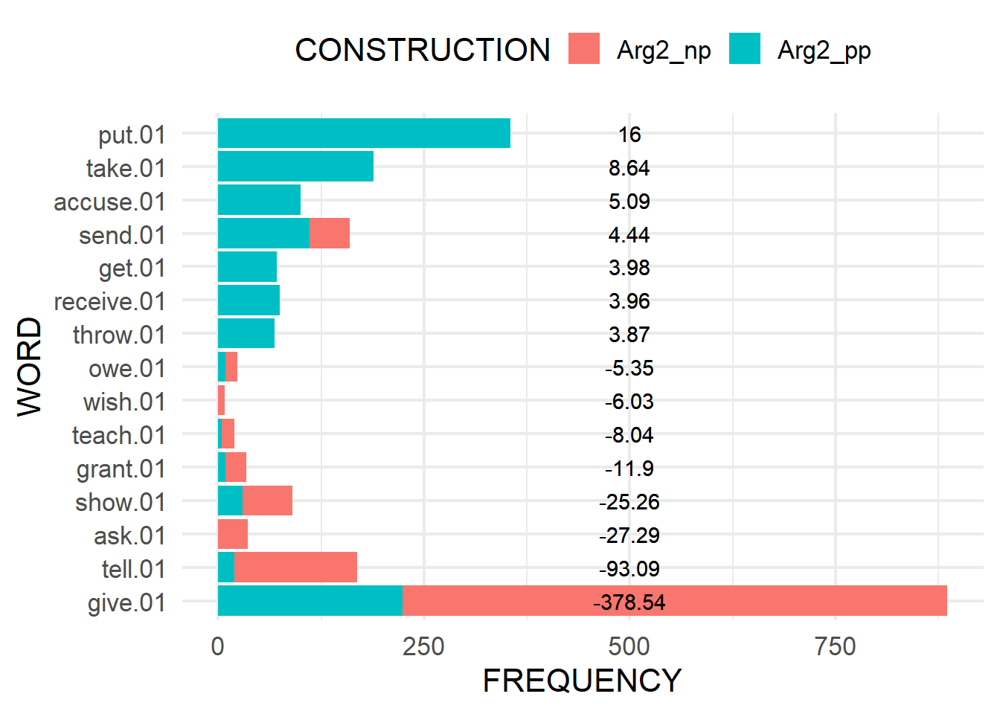
Figure 4 showcases a horizontal bar graph that visualizes the frequency of word senses in relation to the two different constructions. Each bar corresponds to a specific word, and the length of the bar indicates the word’s frequency. The bars are color-segmented, with each color representing one of the two constructions. This segmentation allows for a direct comparison of the word’s frequency in each construction.
The words are ordered vertically based on their FYE values, which measure their association with a particular construction. Positive FYE values indicate a stronger association with the first construction, while negative values indicate a stronger association with the second construction. The absolute value of the FYE is labeled on each bar, providing a numerical representation of the word’s association strength.
Some words predominantly appear in one construction over the other, as evidenced by bars that are mostly one color. This indicates a strong association of those words with a particular construction. Conversely, words with bars that have a more balanced color distribution have a more even frequency across both constructions.
The following tables (Table 12, Table 13 and Table 14) show the top five role sets in each category.
| WORD | Arg2_pp | LLR | PRES | FYE |
|---|---|---|---|---|
| put.01 | 355 | 142 | 3.7 | 16.0 |
| take.01 | 189 | 75 | 2.7 | 8.6 |
| accuse.01 | 100 | 39 | 1.9 | 5.1 |
| use.01 | 76 | 30 | 1.7 | 3.8 |
| receive.01 | 75 | 29 | 1.7 | 4.0 |
| WORD | Arg2_np | LLR | PRES | FYE |
|---|---|---|---|---|
| ask.01 | 36 | 125.7 | -5.4 | 27.3 |
| wish.01 | 8 | 27.8 | -2.6 | 6.0 |
| fine.01 | 3 | 10.4 | -1.6 | 2.3 |
| guarantee.01 | 3 | 10.4 | -1.6 | 2.3 |
| allow.02 | 2 | 6.9 | -1.3 | 1.5 |
| WORD | Arg2_pp | Arg2_np | LLR | PRES | FYE |
|---|---|---|---|---|---|
| give.01 | 224 | 662 | 1737 | -18.7 | 379 |
| tell.01 | 19 | 150 | 424 | -10.2 | 93 |
| show.01 | 29 | 61 | 112 | -5.2 | 25 |
| grant.01 | 9 | 25 | 51 | -3.6 | 12 |
| teach.01 | 4 | 15 | 34 | -2.9 | 8 |
The analysis will focus on the role sets that appear in both Arg2(pp) and Arg2(np). Within this group, two additional subcategories can be distinguished:
- Role sets that prefer the Arg2(pp) construction (11 role sets in total, see Table 15).
- Role sets that prefer the Arg2(np) construction (19 role sets in total, see Table 16).
The details for each of these categories are provided in the tables: Table 15 and Table 16.
| WORD | Arg2_pp | Arg2_np | LLR | PRES | FYE |
|---|---|---|---|---|---|
| sell.01 | 82 | 5 | 11.06 | 1.23 | 2.36 |
| bring.01 | 175 | 27 | 2.84 | 0.67 | 0.95 |
| do.02 | 60 | 8 | 1.82 | 0.54 | 0.68 |
| drive.02 | 17 | 1 | 2.36 | 0.57 | 0.64 |
| provide.01 | 91 | 14 | 1.48 | 0.49 | 0.60 |
| name.01 | 15 | 1 | 1.82 | 0.50 | 0.48 |
| leave.12 | 32 | 4 | 1.20 | 0.43 | 0.42 |
| deliver.01 | 19 | 2 | 1.12 | 0.41 | 0.39 |
| hear.01 | 13 | 1 | 1.32 | 0.43 | 0.31 |
| extend.02 | 17 | 2 | 0.76 | 0.34 | 0.25 |
| deal.02 | 5 | 1 | 0.00 | 0.03 | 0.00 |
| WORD | Arg2_pp | Arg2_np | LLR | PRES | FYE |
|---|---|---|---|---|---|
| give.01 | 224 | 662 | 1737.08 | -18.71 | 378.54 |
| tell.01 | 19 | 150 | 424.19 | -10.18 | 93.09 |
| show.01 | 29 | 61 | 111.73 | -5.24 | 25.26 |
| grant.01 | 9 | 25 | 51.23 | -3.59 | 11.90 |
| teach.01 | 4 | 15 | 34.13 | -2.94 | 8.04 |
| owe.01 | 9 | 14 | 21.34 | -2.28 | 5.35 |
| send.01 | 111 | 49 | 16.33 | -1.81 | 4.44 |
| deny.01 | 1 | 6 | 15.47 | -1.98 | 3.75 |
| pay.01 | 61 | 27 | 8.94 | -1.34 | 2.67 |
| earn.01 | 2 | 5 | 9.75 | -1.57 | 2.58 |
| write.01 | 13 | 10 | 8.26 | -1.36 | 2.45 |
| save.01 | 1 | 4 | 9.26 | -1.54 | 2.38 |
| hand.01 | 3 | 5 | 7.93 | -1.40 | 2.22 |
| award.01 | 13 | 7 | 3.43 | -0.85 | 1.16 |
| charge.01 | 1 | 2 | 3.50 | -0.94 | 1.08 |
| feed.01 | 1 | 2 | 3.50 | -0.94 | 1.08 |
| find.01 | 1 | 2 | 3.50 | -0.94 | 1.08 |
| lend.01 | 18 | 6 | 0.81 | -0.40 | 0.38 |
| sing.01 | 3 | 1 | 0.13 | -0.16 | 0.00 |
When analyzing the data, it is crucial to understand that the preference of a word for a particular construction is determined by the Pearson residual score (“PRES”), not just the raw frequency. This distinction is essential because the expected frequencies are computed based on the overall distribution of the constructions in the dataset. For instance, while the construction Arg2(pp) appeared 5497 times, Arg2(np) only appeared 1180 times.
Pearson residuals provide insight into how the observed frequencies of a word in a construction deviate from what would be expected if the word’s presence in the constructions was purely random. A negative residual indicates that the word appears more frequently in the second construction than expected, given the overall frequencies of the constructions. Conversely, a positive value suggests a preference for the first construction.
To illustrate this, consider the role set “send.01”. While it appears 111 times in Arg2(pp) and 49 times in Arg2(np), the sheer frequency does not tell the whole story. Given that the first construction is roughly 5 times more frequent than the second, if “send.01” had no preference, it would be expected to appear about 20 times in the second construction for every 111 times in the first. However, with 49 appearances, it is clear that “send.01” has a strong preference for the second construction. This is further evidenced by its Pearson residual of -1.81.
4.2.2 Comparison with previous work
To provide a comprehensive understanding of the results from the DCA, it would be beneficial to compare them with a study conducted by Gries & Stefanowitsch (2004). In this study, a DCA was employed to compare collexemes in both the ditransitive and prepositional dative construction. The research was based on the British component of the International Corpus of English (ICE-GB), which has been annotated for various linguistic features. Utilizing a grep tool, specific morphosyntactic patterns corresponding to the construction under investigation were extracted from the corpus, leveraging the detailed grammatical annotations provided by ICE-GB. Some constructions, such as the ditransitive ones, were directly labeled in the corpus and were therefore easily extracted. However, others, like the to-dative, presented challenges due to the inclusion of unrelated matches. These unrelated matches had to be manually filtered out, and to ensure the accuracy of this process, both authors of the study independently reviewed the results.
Once all relevant instances were identified, the collexeme tokens (words appearing in the specific slot under analysis) were lemmatized, and the frequency of each lemma was determined. These word frequencies were then cross-tabulated with the frequencies of the constructions and subjected to the Fisher exact test. Based on the outcomes of this test, words were ranked according to the degree to which they deviated from the expected frequency for each construction.
The results of this study are presented in Table 17.
Table 17: Distinctive collexemes in the Ditransitive and the Prepositional Dative construction in the ICE-GB presented in Gries & Stefanowitsch (2004)
| Collexeme | Prep. Dative | Ditransitive | FYE |
|---|---|---|---|
| Bring | 82 | 7 | 8.83 |
| Play | 37 | 1 | 5.82 |
| Take | 63 | 12 | 3.70 |
| Pass | 29 | 2 | 3.70 |
| Make | 23 | 3 | 2.17 |
| Sell | 14 | 1 | 1.15 |
| Do | 40 | 10 | 1.08 |
| Supply | 12 | 1 | 1.54 |
| Read | 10 | 1 | 1.22 |
| Hand | 21 | 5 | 1.20 |
| Feed | 9 | 1 | 1.07 |
| Leave | 20 | 6 | 0.85 |
| Keep | 7 | 1 | 0.77 |
| Pay | 34 | 13 | 0.74 |
| Assign | 8 | 3 | 0.37 |
| Set | 6 | 2 | 0.37 |
| Write | 9 | 4 | 0.30 |
| Cut | 5 | 2 | 0.27 |
| Lend | 13 | 7 | 0.22 |
| Collexeme | Prep. Dative | Ditransitive | FYE |
|---|---|---|---|
| Give | 146 | 461 | 119.74 |
| Tell | 2 | 128 | 57.95 |
| Show | 15 | 49 | 11.07 |
| Offer | 15 | 43 | 9.99 |
| Cost | 1 | 20 | 8.99 |
| Teach | 1 | 15 | 5.83 |
| Wish | 1 | 9 | 3.30 |
| Ask | 4 | 12 | 2.88 |
| Promise | 1 | 7 | 3.44 |
| Deny | 3 | 8 | 1.92 |
| Award | 3 | 7 | 1.58 |
| Grant | 2 | 5 | 1.25 |
| Cause | 9 | 8 | 0.67 |
| Drop | 2 | 3 | 0.62 |
| Charge | 4 | 4 | 0.53 |
| Get | 32 | 20 | 0.46 |
| Allocate | 5 | 4 | 0.41 |
| Send | 113 | 64 | 0.39 |
| Owe | 9 | 6 | 0.35 |
| Lose | 3 | 2 | 0.24 |
Table 17 presents two subtables of distinctive collexemes in the Prepositional Dative (Table 17 (a)) and Ditransitive constructions (Table 17 (b)). The tables show the collexeme, the frequency in which it appears in the constructions, and the -log10-transformed Fisher-Yates p-value for each collexeme. The Fisher-Yates scores were not -log10-transformed in the original table but were transformed here to make for easier comparison to the data presented in the current study.
Before interpreting the role sets, it is perhaps useful to compare lemmas to lemmas. Figure 5 shows the data from Gries & Stefanowitsch (2004) and the current study for the lemmas that are distinctive for the prepositional dative / Arg2(pp). Figure 6 shows the data from Gries & Stefanowitsch (2004) and the current study for the lemmas that are distinctive for the ditransitive / Arg2(np).
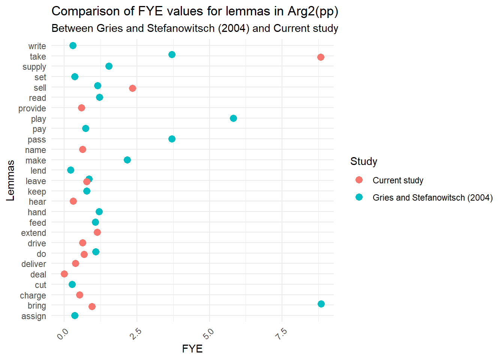
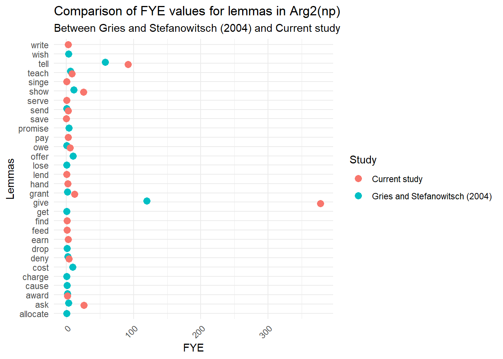
From the scatterplots (Figure 5 & Figure 6) it can be observed that the FYE values for the lemmas distinctive for the prepositional dative / Arg2(pp) are widely spread out. On the other hand, the values for the lemmas distinctive for the ditransitive / Arg2(np) are more concentrated.
There are inherent challenges in drawing direct comparisons between the data in Gries & Stefanowitsch (2004) and the present study due to several key differences. The study by Gries & Stefanowitsch (2004) focuses solely on “to” dative alternations, excluding alternations involving other prepositions. In contrast, this study encompasses all instances where an arg2(pp) is evident. This includes constructions with prepositions like “for” or “with”, which are categorized as Arg2(pp). In this study, there are 5,497 instances that align with the prepositional dative, encompassing all prepositions. To justify the inclusion of all prepositions, it can be argued that a comprehensive examination provides a holistic view of language use, capturing the full spectrum of dative alternations and offering a richer understanding of linguistic patterns. Meanwhile, the Gries & Stefanowitsch (2004) study documents only 1,919 instances of the “to”-dative. This discrepancy underscores the fact that the two studies essentially explore different aspects of the phenomenon. This is also reflected in Figure 5 where the FYE values do not really match.
The overlap in verbs extracted from the corpus is minimal. The identical collexemes for the Arg2(pp) construction are take, sell, bring, leave, do, while the distinct ones are extend, drive, name, provide, charge, deliver, hear, deal, play, pass, make, supply, read, hand, feed, keep, pay, assign, set, write, cut, lend. Similarly, for the Arg2(np) construction, the shared collexemes are give, tell, ask, show, grant, teach, owe, deny, send, award and the unique ones are pay, earn, write, hand, feed, find, serve, singe, lend, save, offer, cost, wish, promise, cause, drop, charge, get, allocate, lose.
A notable observation is the word “bring” in Figure 5. With an FYE score of 8.83, it emerges as the most distinctive collexeme for the prepositional dative that alternates between the two constructions. However, in this study, “bring” has an FYE score of just 0.95, falling below the standard threshold of 1.3. This suggests a more flexible alternation than previously believed. Yet, solely comparing FYE scores might be misleading due to the differences in the studies. A cautious interpretation would be that the lemma “bring” exhibits a more fluid alternation between Arg2(pp) and Arg2(np). The inability to delve deeper into these differences is not a limitation of the study’s scope but rather a constraint due to the unavailability of raw data. Access to the actual text data would have allowed for a more nuanced analysis, especially concerning the frequency of “bring” with each preposition. This data could have further illuminated the meaning behind its attraction. Nonetheless, the observed similarities and differences can serve as a foundation for comparing lemmas and role sets.
4.2.3 Comparison of lemmas and role sets from the current study
This final analysis section examines the results from the DCA on the lemmas and role sets from the current study. It starts with some general insights into the differences between association measures when comparing lemmas and rolesets. The analysis then moves on to examine the data in more detail. Table 18 shows the collexemes distinctive for Arg2(pp) and Table 22 shows the collexemes distinctive for Arg2(np).
In this analysis, three key metrics have been visualized in Figure 7: FYE (Log-transformed Fisher-Yates Exact Test), LLR (Log-Likelihood Ratio), and PRES (Pearson Residuals). These metrics were examined for both lemmas and rolesets to understand their behavior.
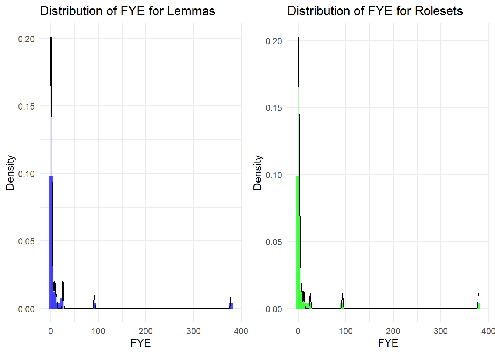
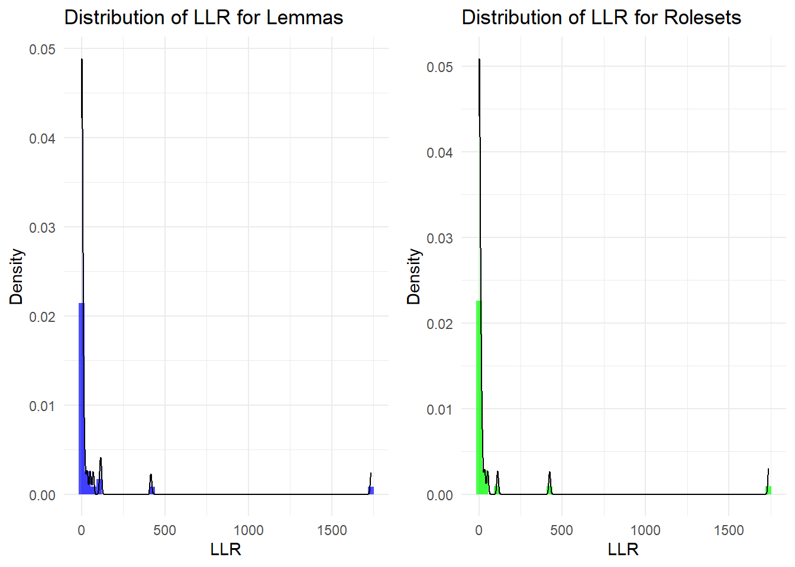
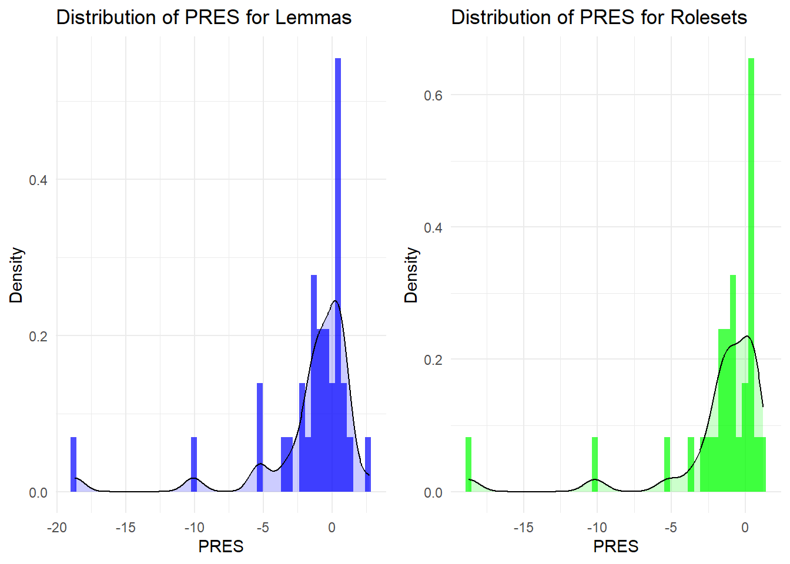
Observing the FYE metric, lemma values tend to cluster near the lower end with some spread. Rolesets show a similar distribution, indicating a consistency between lemmas and rolesets for this metric. For the LLR metric, lemmas present a concentration of values towards the lower end with some spread towards the higher end, and rolesets display a comparable pattern. The PRES metric for both lemmas and rolesets centers around zero, suggesting balanced positive and negative deviations from expected frequencies.
Next, the relationship between effect size (PRES) and strength of evidence (LLR) is explored. For lemmas, there is a correlation of approximately -0.89. Similarly, for rolesets, the correlation is around -0.92. This negative correlation suggests that as the effect size varies, the strength of evidence against the null hypothesis adjusts correspondingly.
Further insights from the FYE metric show that lemmas have a mean of 17.71 and a standard deviation of 66.75. On the other hand, rolesets present a mean of 18.48 and a standard deviation of 70.14. These values hint at a slight difference in the distributions of FYE for lemmas and rolesets.
In summary, the distributions of the metrics for lemmas and rolesets are similar, suggesting that lemmas might offer a representation comparable to rolesets. The relationship between effect size and strength of evidence is consistent with expectations. While there is a minor difference in the FYE metric between lemmas and rolesets, the overall findings emphasize the value of both in linguistic analysis. Considering this, using rolesets does offer a more detailed approach, but the distinction between rolesets and lemmas in this dataset is not substantial in terms of the metrics analyzed. This may support the idea that for many lemmas, focusing on the lemma level might be sufficient for a collostructional analysis, especially if most lemmas correlate strongly with a single roleset. However, rolesets can provide nuances where lemmas might have multiple senses and behave differently regarding alternation in these different senses.
Figure 8 provides a comparative analysis of the three key measures for selected words and their corresponding rolesets. Specifically, there is a focus on the words “save,” “send,” and “bring” and their associated rolesets (“save.01”, “send.01” and “bring.01”). These were specifically chosen to represent a lemma/roleset pair that has near-identical values (bring/bring.01) and where using rolesets instead of lemmas might reveal more information (send/send.01, save/save.01). By juxtaposing the lemmas and rolesets, the aim is to discern any significant variations in their distribution patterns across these measures. The plots are color-coded, with lemmas represented in blue and rolesets in red, facilitating a clearer distinction between the two.
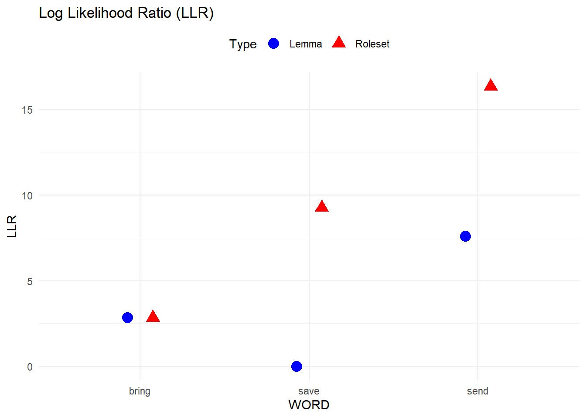
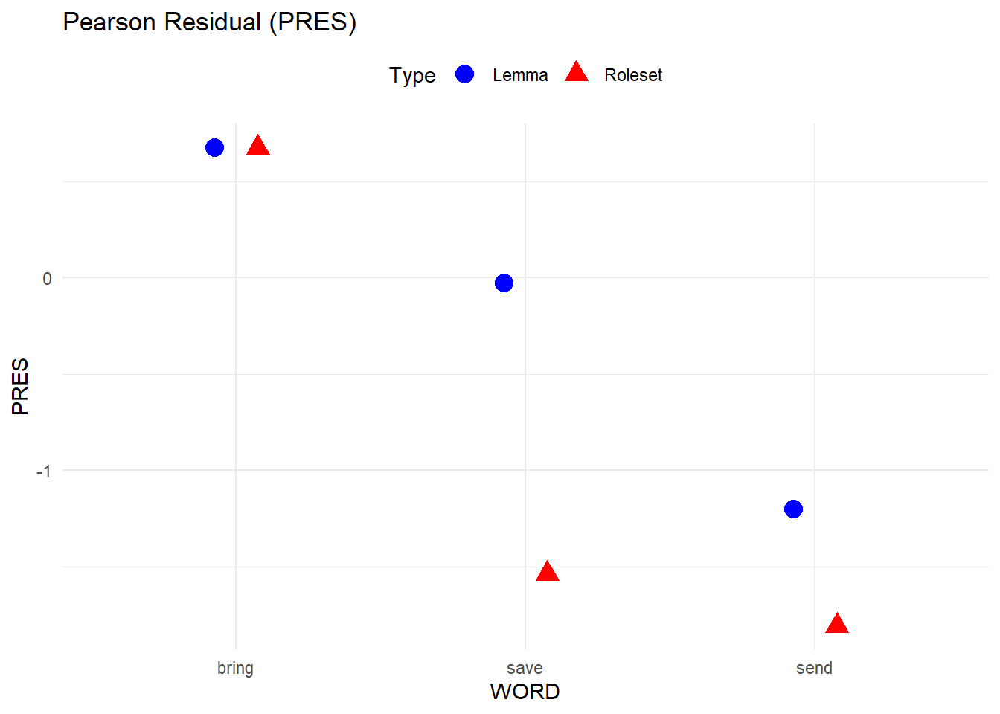
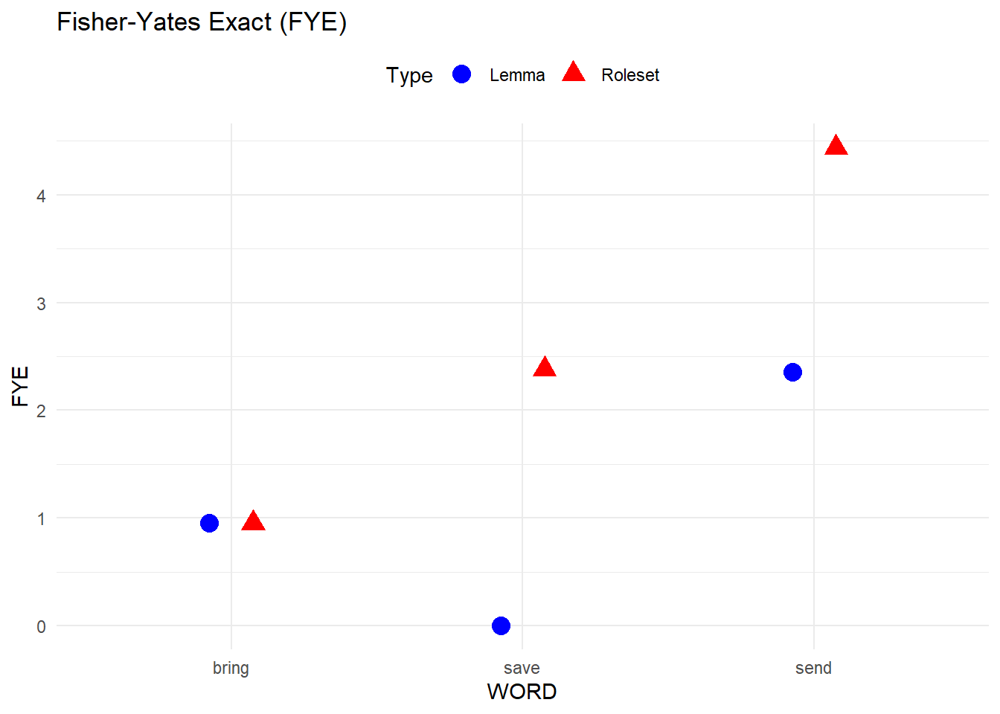
Now, considering these measures and the given data:
For send vs send.01:
- LLR: The roleset has a higher value, suggesting stronger evidence of association compared to the lemma.
- PRES: Both lemma and roleset have negative values, but the roleset’s value is more negative, suggesting a stronger deviation from the expected frequency.
- FYE: The roleset has a higher value, again indicating stronger evidence of association.
For bring vs bring.01:
- All three measures are nearly identical for both lemma and roleset, suggesting a very similar pattern of association.
For save vs save.01:
- LLR: The roleset has a much higher value, suggesting stronger evidence of association compared to the lemma.
- PRES: Both have negative values, but the roleset’s value is more negative.
- FYE: The roleset has a higher value, indicating stronger evidence of association.
It could be stated that while PRES (effect size) provides insights into the magnitude of the deviation from independence, LLR and FYE (strength of evidence) provide the strength of evidence supporting the observed data. Hence, while PRES can be zero (indicating observed equals expected), LLR and FYE can still be high if the observed pattern is statistically significant.
In these examples, rolesets generally tend to have higher or similar association measures compared to lemmas, suggesting either a stronger or similar association pattern. A stronger association pattern with rolesets compared to lemmas can arise from several linguistic and cognitive factors. Rolesets, by their very nature, are more specific than lemmas. They often represent a particular sense or usage of a verb, encompassing a specific set of semantic roles. For instance, the verb “save” can be used in multiple senses, but “save.01” might denote a specific sense of “save”. This specificity can lead to more consistent and predictable patterns of association with particular syntactic structures or arguments. Analyzing rolesets allows for a more granular view of verb usage. This granularity can result in clearer patterns of association, especially when different senses of a lemma have different syntactic or semantic behaviors.
In summary, rolesets, due to their specific nature, can offer a more refined view of verb behavior in terms of their syntactic and semantic associations. The stronger association patterns observed with rolesets compared to lemmas can be a reflection of this specificity and the inherent linguistic and cognitive factors at play. However, the differences between lemmas and rolesets in this dataset are not substantial in terms of the metrics analyzed. The specific instances where using a roleset instead of a lemma might reveal more information are briefly explored in the next section.
4.2.3.1 Lemmas and role sets distinctive for Arg2(pp)
Table 18: Comparison lemma & roleset distinctive for Arg2(pp).
| WORD | Arg2_pp | Arg2_np | LLR | PRES | FYE |
|---|---|---|---|---|---|
| take | 213 | 2 | 68.5 | 2.71 | 8.82 |
| sell | 82 | 5 | 11.1 | 1.23 | 2.36 |
| extend | 32 | 2 | 4.2 | 0.76 | 1.14 |
| bring | 175 | 27 | 2.8 | 0.67 | 0.95 |
| leave | 41 | 4 | 2.8 | 0.65 | 0.78 |
| do | 60 | 8 | 1.8 | 0.54 | 0.68 |
| drive | 17 | 1 | 2.4 | 0.57 | 0.64 |
| name | 16 | 1 | 2.1 | 0.54 | 0.63 |
| provide | 91 | 14 | 1.5 | 0.49 | 0.60 |
| charge | 23 | 2 | 1.9 | 0.53 | 0.53 |
| deliver | 19 | 2 | 1.1 | 0.41 | 0.39 |
| hear | 13 | 1 | 1.3 | 0.43 | 0.31 |
| deal | 5 | 1 | 0.0 | 0.03 | 0.00 |
| WORD | Arg2_pp | Arg2_np | LLR | PRES | FYE |
|---|---|---|---|---|---|
| sell.01 | 82 | 5 | 11.06 | 1.23 | 2.36 |
| bring.01 | 175 | 27 | 2.84 | 0.67 | 0.95 |
| do.02 | 60 | 8 | 1.82 | 0.54 | 0.68 |
| drive.02 | 17 | 1 | 2.36 | 0.57 | 0.64 |
| provide.01 | 91 | 14 | 1.48 | 0.49 | 0.60 |
| name.01 | 15 | 1 | 1.82 | 0.50 | 0.48 |
| leave.12 | 32 | 4 | 1.20 | 0.43 | 0.42 |
| deliver.01 | 19 | 2 | 1.12 | 0.41 | 0.39 |
| hear.01 | 13 | 1 | 1.32 | 0.43 | 0.31 |
| extend.02 | 17 | 2 | 0.76 | 0.34 | 0.25 |
| deal.02 | 5 | 1 | 0.00 | 0.03 | 0.00 |
Table 18 shows some differences between the results of the DCA on the lemmas and role sets. It can be observed that more lemmas alternate between the two constructions compared to senses. This indicates that not all senses of a lemma alternate between constructions. For clarity, a table is provided that lists the senses corresponding to the lemmas. This table helps in identifying lemmas that consistently appear with the same sense. Additionally, another table is presented that displays the lemmas which do not have corresponding senses in the dataset, shedding light on lemmas that are not tied to specific senses in this data.
Table 19: test
| WORD | Arg2_pp | Arg2_np | LLR | PRES | FYE |
|---|---|---|---|---|---|
| sell.01 | 82 | 5 | 11.06 | 1.23 | 2.36 |
| bring.01 | 175 | 27 | 2.84 | 0.67 | 0.95 |
| do.02 | 60 | 8 | 1.82 | 0.54 | 0.68 |
| drive.02 | 17 | 1 | 2.36 | 0.57 | 0.64 |
| provide.01 | 91 | 14 | 1.48 | 0.49 | 0.60 |
| name.01 | 15 | 1 | 1.82 | 0.50 | 0.48 |
| leave.12 | 32 | 4 | 1.20 | 0.43 | 0.42 |
| deliver.01 | 19 | 2 | 1.12 | 0.41 | 0.39 |
| hear.01 | 13 | 1 | 1.32 | 0.43 | 0.31 |
| extend.02 | 17 | 2 | 0.76 | 0.34 | 0.25 |
| deal.02 | 5 | 1 | 0.00 | 0.03 | 0.00 |
| WORD | Arg2_pp | Arg2_np | LLR | PRES | FYE |
|---|---|---|---|---|---|
| take | 213 | 2 | 68.5 | 2.71 | 8.82 |
| charge | 23 | 2 | 1.9 | 0.53 | 0.53 |
A notable word missing from the role set column is “take” which had the highest FYE value in the lemma subtable (8.82 (lemma) & / (rolesets)). “take” was also considered relevant in the Gries & Stefanowitsch (2004) study. The reason that it does not appear in the role set subtable of this research is that most role sets of “take” only appear in Arg2(pp) and do not alternate with Arg2(np). Therefore, it is not considered a word that appears in both constructions.
Gries & Stefanowitsch (2004) provide insights into the behavior of “take” in their study. They note that for the to-dative construction, “bring” emerges as the most distinctive collexeme, aligning seamlessly with the constructional meaning of “(continuously) caused (accompanied) motion” (p. 107). They further observe that verbs like “bring,” “take,” and “pass” inherently suggest a distance between the agent and recipient that needs to be bridged to realize the action denoted by the verb. They also report that “take” alternates between the to-dative (with 63 instances) and the ditransitive (with 12 instances). They offer a general definition for the meaning of “take,” but unfortunately, they do not provide a specific example. This general definition might be too overarching to draw any precise comparisons. However, by delving deeper into the sense data, rather than just the lemma, a more nuanced understanding of its distinctiveness across different senses can be achieved (Table 20).
| Lemma | Role set | Meaning | Appears most in |
|---|---|---|---|
| take | take.01 | take, acquire, … | 189: arg0(np)-v(v)-arg1(np)-arg2(pp) 8: arg0(np)-v(v)-arg1(np)-arg2(advp) |
| take.03 | cause (to be) | 11: arg0(np)-v(v)-arg1(np)-arg2(pp) 3: arg0(np)-v(v)-arg2(pp)-arg1(np) |
|
| take.04 | understand to be | 11: arg0(np)-v(v)-arg1(np)-arg2(pp) 5: arg0(np)-v(v)-arg1(np)-arg2(rb) |
|
| take.10 | need, requiring | 2: arg0(np)-v(v)-arg2(np)-arg1(np) | |
| take.25 | take by surprise | 1: arg0(np)-v(v)-arg1(np)-arg2(pp) |
The table presented above offers an insight into the lemma “take” and its associated role sets. While it might initially seem surprising that specific examples for each role set are not included, there are some considerations behind this choice. Given the vast array of constructions in which the lemma “take” appears, incorporating examples directly into the table could potentially make it overly dense and perhaps less immediately comprehensible.
It is conceivable that providing more examples could offer a richer understanding of each role set. However, the subtle differences between similar constructions might lead to a sense of redundancy if each were to be exemplified. The table’s current design aims to strike a balance, allowing readers to discern patterns in the appearance of the lemma “take” across role sets without overwhelming them with minutiae.
By focusing on the frequency of each construction, the table facilitates a quick identification of both common and rarer constructions associated with “take.” The role sets, coupled with their provided meanings, should offer those familiar with PropBank’s annotation methodology a reasonable context to infer the potential structures in which “take” might appear. It is worth noting that for more detailed information, the PropBank frame files can be consulted directly.
It appears that in none of the role sets of “take” there is an alternation between Arg2(pp) and Arg2(np). “take.01” is the meaning of “take, acquire, come to have, choose, …” appears 189 times in Arg2(pp) and 8 times in arg0(np)-v(v)-arg1(np)-arg2(advp) but not in Arg2(np). Only in the role set of “take.10”, meaning “need, requiring”, does it appear in Arg2(np) as in the following utterances from the corpus: “I should’ve known that if it took her ten minutes I should ’ve hung up”.
| roleType | pos | string | indices | roleset | lemma |
|---|---|---|---|---|---|
| arg0 | np | it | 6 | ||
| v | v | took | 7 | take.10 | take |
| arg2 | np | her | 8 | ||
| arg1 | np | ten mintues | 9:10 |
As a result, “take.01” has 189 appearances in Arg2(pp) and 0 appearances in Arg2(np). It has a strong association with Arg2(pp). This is why “take” does not appear in the role set subtable of Table 18, which only considers role sets that appear in both constructions. It would be interesting to see in which cases Gries & Stefanowitsch (2004) found “take” to alternate between the two constructions, specifically in the ditransitive construction as this alternation was not observed in the current study. However, unfortunately, the data is not available to make this comparison.
4.2.3.2 Lemmas and role sets distinctive for Arg2(np)
The following Table 22 shows the lemmas and role sets distinctive for Arg2(np).
Table 22: Comparison lemma & roleset distinctive for Arg2(np).
| WORD | Arg2_pp | Arg2_np | LLR | PRES | FYE |
|---|---|---|---|---|---|
| give | 225 | 662 | 1734.52 | -18.70 | 377.99 |
| tell | 21 | 150 | 416.32 | -10.10 | 91.40 |
| ask | 1 | 36 | 116.89 | -5.34 | 25.80 |
| show | 29 | 61 | 111.73 | -5.24 | 25.26 |
| grant | 9 | 25 | 51.23 | -3.59 | 11.90 |
| teach | 4 | 15 | 34.13 | -2.94 | 8.04 |
| owe | 9 | 14 | 21.34 | -2.28 | 5.35 |
| deny | 1 | 6 | 15.47 | -1.98 | 3.75 |
| pay | 61 | 27 | 8.94 | -1.34 | 2.67 |
| earn | 2 | 5 | 9.75 | -1.57 | 2.58 |
| write | 13 | 10 | 8.26 | -1.36 | 2.45 |
| send | 143 | 49 | 7.60 | -1.20 | 2.36 |
| hand | 3 | 5 | 7.93 | -1.40 | 2.22 |
| award | 13 | 7 | 3.43 | -0.85 | 1.16 |
| feed | 1 | 2 | 3.50 | -0.94 | 1.08 |
| find | 1 | 2 | 3.50 | -0.94 | 1.08 |
| serve | 1 | 1 | 1.08 | -0.50 | 0.49 |
| singe | 1 | 1 | 1.08 | -0.50 | 0.49 |
| lend | 18 | 6 | 0.81 | -0.40 | 0.38 |
| save | 18 | 4 | 0.00 | -0.03 | 0.00 |
| WORD | Arg2_pp | Arg2_np | LLR | PRES | FYE |
|---|---|---|---|---|---|
| give.01 | 224 | 662 | 1737.08 | -18.71 | 378.54 |
| tell.01 | 19 | 150 | 424.19 | -10.18 | 93.09 |
| show.01 | 29 | 61 | 111.73 | -5.24 | 25.26 |
| grant.01 | 9 | 25 | 51.23 | -3.59 | 11.90 |
| teach.01 | 4 | 15 | 34.13 | -2.94 | 8.04 |
| owe.01 | 9 | 14 | 21.34 | -2.28 | 5.35 |
| send.01 | 111 | 49 | 16.33 | -1.81 | 4.44 |
| deny.01 | 1 | 6 | 15.47 | -1.98 | 3.75 |
| pay.01 | 61 | 27 | 8.94 | -1.34 | 2.67 |
| earn.01 | 2 | 5 | 9.75 | -1.57 | 2.58 |
| write.01 | 13 | 10 | 8.26 | -1.36 | 2.45 |
| save.01 | 1 | 4 | 9.26 | -1.54 | 2.38 |
| hand.01 | 3 | 5 | 7.93 | -1.40 | 2.22 |
| award.01 | 13 | 7 | 3.43 | -0.85 | 1.16 |
| charge.01 | 1 | 2 | 3.50 | -0.94 | 1.08 |
| feed.01 | 1 | 2 | 3.50 | -0.94 | 1.08 |
| find.01 | 1 | 2 | 3.50 | -0.94 | 1.08 |
| lend.01 | 18 | 6 | 0.81 | -0.40 | 0.38 |
| sing.01 | 3 | 1 | 0.13 | -0.16 | 0.00 |
Upon examining the data, it is clear that the FYE values for the lemmas and role sets distinctive for Arg2(np) are generally higher than those in Table 18. This might suggest that the lemma and role sets for Arg2(np) are more distinctive and have less alternation than those distinctive for Arg2(pp). However, the difference in frequency between these two constructions should be taken into account when interpreting these results. The high frequency of one construction could make it challenging to accumulate sufficient evidence of preference, especially when compared to a lower-frequency construction.
Table 23: test
| WORD | Arg2_pp | Arg2_np | LLR | PRES | FYE |
|---|---|---|---|---|---|
| give.01 | 224 | 662 | 1737.08 | -18.71 | 378.54 |
| tell.01 | 19 | 150 | 424.19 | -10.18 | 93.09 |
| show.01 | 29 | 61 | 111.73 | -5.24 | 25.26 |
| grant.01 | 9 | 25 | 51.23 | -3.59 | 11.90 |
| teach.01 | 4 | 15 | 34.13 | -2.94 | 8.04 |
| owe.01 | 9 | 14 | 21.34 | -2.28 | 5.35 |
| send.01 | 111 | 49 | 16.33 | -1.81 | 4.44 |
| deny.01 | 1 | 6 | 15.47 | -1.98 | 3.75 |
| pay.01 | 61 | 27 | 8.94 | -1.34 | 2.67 |
| earn.01 | 2 | 5 | 9.75 | -1.57 | 2.58 |
| write.01 | 13 | 10 | 8.26 | -1.36 | 2.45 |
| save.01 | 1 | 4 | 9.26 | -1.54 | 2.38 |
| hand.01 | 3 | 5 | 7.93 | -1.40 | 2.22 |
| award.01 | 13 | 7 | 3.43 | -0.85 | 1.16 |
| feed.01 | 1 | 2 | 3.50 | -0.94 | 1.08 |
| find.01 | 1 | 2 | 3.50 | -0.94 | 1.08 |
| lend.01 | 18 | 6 | 0.81 | -0.40 | 0.38 |
| WORD | Arg2_pp | Arg2_np | LLR | PRES | FYE |
|---|---|---|---|---|---|
| ask | 1 | 36 | 116.9 | -5.3 | 25.80 |
| serve | 1 | 1 | 1.1 | -0.5 | 0.49 |
| singe | 1 | 1 | 1.1 | -0.5 | 0.49 |
The word “give” with the role set “give.01” stands out as being particularly distinctive for the Arg2(np) construction. When comparing the FYE values of lemmas and their corresponding role sets, a pattern emerges. Unlike the findings in Table 18, here the FYE values are either the same or higher. Role sets such as “tell.01”, “send.01”, and “save.01” have FYE values that are higher than those of their respective lemmas. This can be attributed to the fact that when data is divided into role sets, the frequency of a specific role set in the Arg2(pp) construction is lower than the overall frequency of its lemma in the same construction. This results in a higher distinctiveness for the Arg2(np) construction. It is important to consider the frequencies that these observations are based on. For “give”, most occurrences are associated with a single role set, while for “save.01”, the observations are based on a smaller sample size. Making broad claims such as “FYE is always equal or higher” might not fully represent the data’s complexity.
The table Table 24 provides further details on this observation.
| Lemma | Role set | Meaning | Appears most in |
|---|---|---|---|
| save | save.02 | desperate peril sense | 13: arg0(np)-v(v)-arg1(np)-arg2(pp) 1: arg0(np)-v(v)-arg1(np)-arg2(np) |
| save.01 | keep from spending | 4: arg0(np)-v(v)-arg2(np)-arg1(np) 1: arg0(np)-v(v)-arg1(np)-arg2(pp) |
|
| save.03 | collect, accrue | 4: arg0(np)-v(v)-arg1(np)-arg2(pp) |
In role sets “save.02” and “save.03”, “save” does not appear in the construction Arg2(np) but rather in Arg2(pp). However, in role set “save.01”, “save” is distinctive for Arg2(np), which is why the FYE value is higher than the FYE value of the lemma “save”.
Another similar case is the word “send”. The lemma “send” has FYE 2.36 and the role set “send.01” has an FYE value of 4.44. Table 25 shows this further:
| Lemma | Role set | Meaning | Appears most in |
|---|---|---|---|
| send | send.01 | give | 111: arg0(np)-v(v)-arg1(np)-arg2(pp) 49: arg0(np)-v(v)-arg2(np)-arg1(np) |
| send.02 | cause to action | 30: arg0(np)-v(v)-arg1(np)-arg2(c(“s,”vp”)) 21: arg0(np)-v(v)-arg1(np)-arg2(pp) |
|
| send.03 | cause motion | 11: arg0(np)-v(v)-arg1(np)-arg2(pp) |
It is not a surprise that the lemma “send” in the role set “send.01” with the meaning “give” is distinctive for arg0(np)-v(v)-arg2(np)-arg1(np). This is because it serves a similar function as the role set “give.01” which is the most distinctive for arg0(np)-v(v)-arg2(np)-arg1(np). For example, consider the following sentence from the corpus: “But I think in a larger sense we were saying to the President Mr. President uh I hope you’ll send us someone who doesn’t blow the place up doesn’t – doesn’t – doesn’t cre- create hi- his own or her own sort of nuclear option.”
| roleType | pos | string | indices | roleset | lemma |
|---|---|---|---|---|---|
| arg0 | np | you | 19 | ||
| v | v | send | 21 | send.01 | send |
| arg2 | np | us | 22 | ||
| arg1 | np | someone… | 23:50 |
The word “send” can be replaced with “give” and the sentence’s meaning would be preserved. This is why it is not surprising that the role set “send.01” is more distinctive for Arg2(np) than the lemma “send”.
Further, it can be noted that the lemma “ask” is not represented in the role sets table. This is comparable to the cases of “take” and “leave” previously discussed. As Table 26 shows:
| Lemma | Role set | Meaning | Appears most in |
|---|---|---|---|
| ask | ask.01 | ask a question | 36: arg0(np)-v(v)-arg2(np)-arg1(np) 4: arg0(np)-v(v)-arg2(rp)-arg1(np) |
| ask.02 | ask a favor | 1: arg0(np)-v(v)-arg1(np)-arg2(pp) |
The lemma “ask” only appears in Arg2(pp) as role set “ask.02” which has “ask a favor, ask a request, ask for” as meaning. Role set “ask.01” only appears in Arg2(np) and one other construction. This means that “ask” as role set “ask.01” does not alternate between Arg2(np) and Arg2(pp) which is why it is not represented in this role sets table.
5 Conclusion
In the exploration of Computational Construction Grammar through the lens of the CCxG Explorer combined with a PropBank-annotated approach for Distinctive Collexeme Analysis, several insights and considerations have emerged. The methodology, while offering a fresh perspective, comes with inherent limitations and advantages.
One of the primary limitations is the inability of the CCxG Explorer to allow traceback to the original corpus. This restriction hinders a deeper analysis and the contextualization of findings within broader linguistic contexts. Additionally, the PropBank annotation for the argument structure constructions, which is rooted in Construction Grammar and Frame Semantics, can be a subject of debate. Different schools of linguistic thought might not agree with the current study’s take on what a construction and alternation entails. Also, the choice of schema that permits a wide range of prepositional phrases in the Arg2 slot, while holistic in its approach, might not always capture the most accurate for the studied alternation.
On the other hand, the distinction between using rolesets and lemmas in the analysis did not reveal significant differences in many instances. This observation suggests that in collostructional analysis, relying on lemmas might be a practical approach. However, in specific cases, rolesets offer a more detailed analysis, especially when the focus is on the particular sense of a word. One of the standout benefits of employing PropBank is the capability to extract schemas automatically. This automation eliminates the need for time-consuming manual annotation, making it feasible to analyze larger datasets.
Yet, it is crucial to note that this study merely scratches the surface regarding the differences between lemmas and rolesets. There is a vast landscape of linguistic nuances and patterns that remains unexplored, and further research is needed to delve deeper into these distinctions.
In conclusion, the combination of Computational Construction Grammar with a PropBank-annotated approach presents an intriguing methodological avenue for linguistic inquiries. The CCxG Explorer has been instrumental in extracting specific argument structure construction schemas from the PropBank-annotated corpus. The most frequent constructions identified served as the foundation for the DCA. This study highlights the potential of examining rolesets over lemmas for a more refined analysis of verbs within specific construction schemas. It provides insights into co-occurrence patterns and the alternations between different word senses of lemmas. However, these findings are initial steps, and they open the door for more in-depth research to address the questions and challenges that this study has brought to light.
References
Beuls, Katrien & Paul Van Eecke. to appear. Construction Grammar and Artificial Intelligence. 29.
Beuls, Katrien & Paul Van Eecke. 2021. Operationalising Usage-Based Construction Grammar on a Large Scale: A Case Study for English Argument Structure. Essonne.
Beuls, Katrien, Paul Van Eecke & Vanja Sophie Cangalovic. 2021. A Computational Construction Grammar Approach to Semantic Frame Extraction. Linguistics Vanguard 7(1). https://doi.org/10.1515/lingvan-2018-0015.
Bonial, Claire, Jena Hwang, Julia Bonn, Kathryn Conger, Olga Babko-Malaya & Martha Palmer. 2012. English Propbank Annotation Guidelines. Center for Computational Language and Education Research Institute of Cognitive Science University of Colorado at Boulder 48.
Croft, William. 2001. Radical Construction Grammar: Syntactic Theory in Typological Perspective. Oxford University Press on Demand.
Croft, William & Alan Cruse. 2004. Cognitive Linguistics. Cambridge University Press.
Diessel, Holger. 2019. The grammar network. Cambridge University Press.
Diessel, Holger. 2023. The constructicon: Taxonomies and networks (Elements in Construction Grammar). Cambridge University Press. https://doi.org/10.1017/9781009327848.
EHAI. Babel. GitLab. https://gitlab.ai.vub.ac.be/ehai/babel (21 January, 2023).
Ellis, Nick C. & Fernando Ferreira–Junior. 2009. Construction Learning as a Function of Frequency, Frequency Distribution, and Function. The Modern language journal 93(3). 370–385. https://doi.org/10.1111/j.1540-4781.2009.00896.x.
Fillmore, Charles. 2006. Chapter 10 frame semantics. In Dirk Geeraerts (ed.), Cognitive linguistics: Basic readings, 373–400. Berlin, New York: De Gruyter Mouton. https://doi.org/doi:10.1515/9783110199901.373. https://doi.org/10.1515/9783110199901.373.
Fillmore, Charles J. 1988. The Mechanisms of "Construction Grammar". In Annual Meeting of the Berkeley Linguistics Society, vol. 14, 35–55.
Fillmore, Charles J., Paul Kay & Mary C. O’Connor. 1988. Regularity and Idiomaticity in Grammatical Constructions: The Case of Let Alone. Language 64(3). 501–538. https://doi.org/10.2307/414531.
Gilquin, Gaëtanelle. 2013. Making Sense of Collostructional Analysis: On the Interplay Between Verb Senses and Constructions. Constructions and frames 5(2). 119–142. https://doi.org/10.1075/cf.5.2.01gil.
Goldberg, Adele E. 1995. Constructions: A Construction Grammar Approach to Argument Structure. The University of Chicago Press.
Goldberg, Adele E. 2002. Surface Generalizations: An Alternative to Alternations. https://doi.org/10.1515/cogl.2002.022.
Gries, Stefan Th. 2013. Collostructional Analysis. The Oxford Handbook of Construction Grammar 93–108.
Gries, Stefan Th. 2022. Coll.analysis 4.0. A script for r to compute perform collostructional analyses. https://www.stgries.info/teaching/groningen/index.html (21 January, 2023).
Gries, Stefan Th & Anatol Stefanowitsch. 2004. Extending Collostructional Analysis: A Corpus-Based Perspective Onalternations’. International journal of corpus linguistics 9(1). 97–129. https://doi.org/10.1075/ijcl.9.1.06gri.
Gries, Stefan Th & Anatol Stefanowitsch. 2010. Cluster Analysis and the Identification of Collexeme Classes. Empirical and experimental methods in cognitive/functional research 73. 90.
Haspelmath, Martin. 2023. On what a construction is. Revised version to appear in "Constructions". https://ling.auf.net/lingbuzz/007200.
Hilpert, Martin. 2006. Distinctive Collexeme Analysis and Diachrony. https://doi.org/10.1515/CLLT.2006.012.
Hoffmann, Thomas. 2017. Construction grammars. In The Cambridge Handbook of Cognitive Linguistics, 310–329. https://doi.org/10.1017/9781316339732.020.
Hoffmann, Thomas. 2022. Construction grammar: The structure of English. Cambridge University Press.
Kay, Paul. 1990. Even. Linguistics and philosophy 13(1). 59–111. https://doi.org/10.1007/BF00630517.
Levshina, Natalia. 2015. How to Do Linguistics with R. Data Exploration and Statistical Analysis, Amsterdam-Philadelphia.
Palmer, Martha, Daniel Gildea & Paul Kingsbury. 2005. The Proposition Bank: An Annotated Corpus of Semantic Roles. Computational Linguistics 31(1). 71–106. https://doi.org/10.1162/0891201053630264. https://doi.org/10.1162/0891201053630264.
Pradhan, Sameer, Julia Bonn, Skatje Myers, Kathryn Conger, Tim O’gorman, James Gung, Kristin Wright-bettner & Martha Palmer. 2022. PropBank comes of Age—Larger, smarter, and more diverse. In Proceedings of the 11th joint conference on lexical and computational semantics, 278–288. Seattle, Washington: Association for Computational Linguistics. https://doi.org/10.18653/v1/2022.starsem-1.24. https://aclanthology.org/2022.starsem-1.24.
Ruppenhofer, Josef, Michael Ellsworth, Miriam R. L. Petruck, Christopher R. Johnson & Jan Scheffczyk. 2006. FrameNet II: Extended theory and practice. In.
Stefanowitsch, Anatol. 2014. Collostructional Analysis: A Case Study of the English into-Causative. Constructions collocations patterns 217–238. https://doi.org/10.1515/9783110356854.217.
Stefanowitsch, Anatol & Stefan Th Gries. 2008. Channel and Constructional Meaning: A Collostructional Case Study. Cognitive sociolinguistics: language variation, cultural models, social systems. Berlin: Mouton de Gruyter 129–152. https://doi.org/10.1515/9783110199154.2.129.
Ungerer, Tobias & Stefan Hartmann. 2023. Constructionist approaches: Past, present, future. https://doi.org/10.31234/osf.io/83dvj.
Van Eecke, Paul & Katrien Beuls. 2018. Exploring the Creative Potential of Computational Construction Grammar. Zeitschrift für Anglistik und Amerikanistik 66(3). 341–355. https://doi.org/10.1515/zaa-2018-0029.
van Trijp, Remi. 2024. Different constructional approaches in practice: A comparative study. In Cambridge handbook of construction grammar. Cambridge: Cambridge University Press.
Weischedel, Ralph, Martha Palmer, Mitchell Marcus, Eduard Hovy, Sameer Pradhan, Lance Ramshaw, Nianwen Xue, Ann Taylor, Jeff Kaufman & Michelle Franchini. 2013. Ontonotes Release 5.0. Linguistic Data Consortium, Philadelphia, PA 23.
Wickham, Hadley, Mara Averick, Jennifer Bryan, Winston Chang, Lucy D’Agostino McGowan, Romain François, Garrett Grolemund, et al. 2019. Welcome to the tidyverse. Journal of Open Source Software 4(43). 1686. https://doi.org/10.21105/joss.01686.
Wiliński, Jaros\law. 2017. On the Brink of-Noun Vs. On the Verge of-Noun: A Distinctive-Collexeme Analysis. Research in Language (RiL) 15(4). 425–443. https://doi.org/10.1515/rela-2017-0024.
Footnotes
The data, analysis results and R scripts used in this paper are available in full at https://github.com/mclm2022/moerman.↩︎
It has to be noted that in the time that it took to write this paper, the CCxG Explorer has been updated and is now called SemBrowse. The functionality of the tool has not changed, only expanded, and the data set used for this study was extracted using the original CCxG Explorer.↩︎